巢狀分群：凝聚往上黏、分裂往下切
▼🤖 AI 生圖可用：重繪此示意圖的提示詞（結構化）
# AI 生圖提示詞 — kp-1 巢狀 vs 不巢狀分群
## WHAT
畫一張左右對照的幾何示意圖，同一組五個點 x1…x5。左欄展示 Re1 巢狀於 Re2：Re1 的三個小圈（{x1,x3}、{x4}、{x2,x5}）分別完整落在 Re2 兩個大圈（{x1,x3,x4}、{x2,x5}）裡面，圈只變大、不交叉。右欄展示 Re1 對 Re3 不巢狀：Re3 的切法 {x1,x4}、{x3}、{x2,x5} 把 Re1 的 {x1,x3} 拆散，虛線細圈與實線粗圈交叉。
## WHY
要傳達的反直覺：「圈看起來都包住了點」不等於巢狀——關鍵是 Re1 的**每一個**叢集都要能完整塞進 Re2/Re3 的**某一個**叢集。右邊 {x1,x3} 同時牽涉 x1 群與 x3 群，無法對應 Re3 的任何單一叢集，所以不算巢狀。讀者遮住文字後仍應看出左邊小圈被大圈包住、右邊圈線交叉。
## MUST show
- 左右兩欄，各五個標名點 x1…x5，位置一致以便對照。
- 左欄：Re1 三個虛線小圈 + Re2 兩個實線大圈；箭頭或視覺暗示「圈變大」；標「Re1 包進 Re2」「巢狀」。
- 右欄：Re1 同左 + Re3 三個實線圈 {x1,x4}、{x3}、{x2,x5}；{x1,x3} 小圈與 Re3 圈交叉，打叉或紅色警示；標「不巢狀」。
- 底部一句：粗切只能合併細切，不能把已在同一細叢集的點拆開。
- 文字用繁中，寫 Re1/Re2/Re3 與點名，不要 LaTeX 或 $ 符號。
## AVOID
- 不要畫成名詞連連看（方框+箭頭串術語）。
- 不要放數學公式或 $\Re_1\sqsubset\Re_2$ 類符號。
- 不要讓左右兩欄點位不同，削弱對照。
- 不要用 class="card"（講義用 svg-panel）。
- 不要外鏈字體。
## STYLE
扁平教學示意，主題色 #059669 / #047857（巢狀）對比 #dc2626（不巢狀），虛線表細切、實線表粗切，圓角 svg-panel 底框，繁中標籤，幾何承載因果。一句話
階層式分群不像上一章只吐一個切法，而是吐出一整串「一層包一層」的叢集；凝聚法從 $N$ 個單點一路黏成 $X$，分裂法則從 $X$ 一路切回 $N$ 個單點。
是什麼
資料集仍是 $X=\{\boldsymbol{x}_i,\, i=1,\ldots,N\}$，一個分群 $\Re=\{C_j,\, j=1,\ldots,m\}$ 裡每個 $C_j\subseteq X$。若 $\Re_1$ 有 $k$ 個叢集、$\Re_2$ 有 $r$ 個叢集且 $r<k$，且 $\Re_1$ 裡每一個叢集都是 $\Re_2$ 裡某個叢集的子集（至少有一個是真子集），就說 $\Re_1$ nested in（巢狀於）$\Re_2$，記作 $\Re_1\sqsubset\Re_2$。一個分群不會跟自己巢狀。
原文例子：$\Re_1=\{\{\boldsymbol{x}_1,\boldsymbol{x}_3\},\{\boldsymbol{x}_4\},\{\boldsymbol{x}_2,\boldsymbol{x}_5\}\}$ 巢狀於 $\Re_2=\{\{\boldsymbol{x}_1,\boldsymbol{x}_3,\boldsymbol{x}_4\},\{\boldsymbol{x}_2,\boldsymbol{x}_5\}\}$——$\{\boldsymbol{x}_1,\boldsymbol{x}_3\}$ 真子集於 $\{\boldsymbol{x}_1,\boldsymbol{x}_3,\boldsymbol{x}_4\}$，$\{\boldsymbol{x}_4\}$ 也是，$\{\boldsymbol{x}_2,\boldsymbol{x}_5\}$ 剛好相同。但 $\Re_1$ 不巢狀於 $\Re_3=\{\{\boldsymbol{x}_1,\boldsymbol{x}_4\},\{\boldsymbol{x}_3\},\{\boldsymbol{x}_2,\boldsymbol{x}_5\}\}$（$\{\boldsymbol{x}_1,\boldsymbol{x}_3\}$ 不是 $\Re_3$ 任何一叢集的子集），也不巢狀於 $\Re_4=\{\{\boldsymbol{x}_1,\boldsymbol{x}_2,\boldsymbol{x}_4\},\{\boldsymbol{x}_3,\boldsymbol{x}_5\}\}$。
階層式演算法跑 $N$ 步（跟資料點數一樣多），第 $t$ 步的分群由第 $t-1$ 步改寫而來，分成兩大類：
- 凝聚（agglomerative）：初始 $\Re_0$ 有 $N$ 個叢集，每個只含 $X$ 的一個點。第 1 步得到 $\Re_1$，有 $N-1$ 個集合，且 $\Re_0\sqsubset\Re_1$。一路做到 $\Re_{N-1}$，只剩一個集合，就是整個 $X$。整條鏈是 $\Re_0\sqsubset\Re_1\sqsubset\cdots\sqsubset\Re_{N-1}$。
- 分裂（divisive）：走相反方向。初始 $\Re_0$ 只有一個集合 $X$；第 1 步 $\Re_1$ 切成兩個集合，且 $\Re_1\sqsubset\Re_0$。最後 $\Re_{N-1}$ 有 $N$ 個單點叢集。鏈是 $\Re_{N-1}\sqsubset\Re_{N-2}\sqsubset\cdots\sqsubset\Re_0$。
另一個等價說法：若兩個向量在階層的第 $t$ 步被併入同一叢集，之後所有更粗的分群裡，它們都會待在同一叢集——這就是巢狀性質的直覺。
為什麼
社會科學、生物分類學、醫學、考古、電腦科學等領域常需要「從細切到粗切」或「從粗切到細切」的完整地圖，而不是只給一個切法。巢狀定義把「粗切包含細切」講清楚：細群裡的點不會在變粗時被拆散。
凝聚從最碎開始往上黏，適合直覺上「相近的先合併」；分裂從整體開始往下切，適合「先找大輪廓再細分」。本章後續主要講凝聚法；分裂法在 §13.4 簡要提及。
怎麼用 / 怎麼記
- 口訣：凝聚往上黏（$N$ 點→$1$ 群），分裂往下切（$1$ 群→$N$ 點）。
- 巢狀判斷：$\Re_1$ 每個叢集都要能「塞進」$\Re_2$ 的某個叢集；只要有一個塞不進去，就不巢狀。
- 原文 $\Re_1$ vs $\Re_2$：$\{\boldsymbol{x}_1,\boldsymbol{x}_3\}$、$\{\boldsymbol{x}_4\}$ 被 $\{\boldsymbol{x}_1,\boldsymbol{x}_3,\boldsymbol{x}_4\}$ 包住，$\{\boldsymbol{x}_2,\boldsymbol{x}_5\}$ 不變——所以 $\Re_1\sqsubset\Re_2$。
- 符號：$\sqsubset$ 讀作「巢狀於」，箭頭方向：細的在左、粗的在右（凝聚方向 $\Re_0\sqsubset\cdots\sqsubset\Re_{N-1}$）。
依原文，$\Re_1=\{\{\boldsymbol{x}_1,\boldsymbol{x}_3\},\{\boldsymbol{x}_4\},\{\boldsymbol{x}_2,\boldsymbol{x}_5\}\}$ 與下列哪個分群的關係正確？
凝聚式階層分群從 $\Re_0$ 到 $\Re_{N-1}$，下列哪一項符合原文？
廣義凝聚方案 GAS：$N$ 步黏成一棵樹
▼一句話
GAS 是凝聚分群的通用骨架：每步在現有叢集中找「最近（或最像）」的一對合併，跑 $N-1$ 次後整批資料變成一棵樹狀階層。
是什麼
令 $g(C_i,C_j)$ 衡量兩叢集 $C_i$、$C_j$ 的接近程度，$t$ 為目前階層層級。廣義凝聚方案（Generalized Agglomerative Scheme, GAS）如下：
- 初始化：$\Re_0=\{C_i=\{\boldsymbol{x}_i\},\, i=1,\ldots,N\}$，$t=0$。
- 重複：$t\leftarrow t+1$；在 $\Re_{t-1}$ 所有叢集對 $(C_r,C_s)$ 中，找一對 $(C_i,C_j)$ 使 $$ g(C_i,C_j)=\begin{cases}\min\limits_{r,s} g(C_r,C_s), & \text{若 } g \text{ 是相異度函數} \\ \max\limits_{r,s} g(C_r,C_s), & \text{若 } g \text{ 是相似度函數}\end{cases} \tag{13.1} $$
- 令 $C_q=C_i\cup C_j$，新分群 $\Re_t=(\Re_{t-1}-\{C_i,C_j\})\cup\{C_q\}$。
- 直到所有向量落在同一叢集。
這套流程產生 $N$ 層分群，每一層都巢狀於之後更粗的分群：$\Re_{t_1}\sqsubset\Re_{t_2}$（$t_1<t_2$，$t_2=1,\ldots,N-1$）。若兩點在第 $t$ 步被併入同一叢集，之後所有分群裡它們永遠同群——這是巢狀性的另一種說法。
巢狀性的缺點：早期某一步合併錯了，後面沒有機制可以「拆開重來」（Gower 1967）。錯誤會一路被鎖進階層裡。
計算量：第 $t$ 層有 $N-t$ 個叢集，要檢查 $\binom{N-t}{2}=\frac{(N-t)(N-t-1)}{2}$ 對。全程加總為 $$ \sum_{t=0}^{N-1}\binom{N-t}{2}=\sum_{k=1}^{N}\binom{k}{2}=\frac{(N-1)N(N+1)}{6} $$ 個叢集對，總運算量約與 $N^3$ 成正比；實際複雜度還取決於 $g$ 怎麼定義。
為什麼
GAS 把各種凝聚演算法（單連、全連、平均連……）統一成同一個「找最佳配對→合併→更新」的框架。式 (13.1) 的 min/max 切換很重要：相異度越小越像，所以要找最小；相似度越大越像，所以要找最大——搞反就會合併錯對。
了解 $O(N^3)$ 配對次數，有助於判斷資料量一大要不要換更快的演算法或近似方法。
怎麼用 / 怎麼記
- 三步驟：單點起步 → 每步合併一對 → 直到只剩一群。
- 式 (13.1)：$g$ 是相異度用 min，是相似度用 max。
- 配對總數：$(N-1)N(N+1)/6$，約 $N^3$ 量級。
- 早錯難回：巢狀性＝合併後不能反悔，選 $g$ 要慎重。
在 GAS 中，若 $g(C_i,C_j)$ 是相異度函數，式 (13.1) 要求怎麼選要合併的叢集對？
GAS 全程需檢視的叢集對總數，原文給出下列哪一個？
樣式矩陣、接近矩陣與樹狀圖
▼一句話
先把 $N$ 個 $l$ 維向量排成樣式矩陣 $D(X)$，再算成對接近度得到 $P(X)$，凝聚過程畫成樹狀圖——切一刀就得到一種分群。
是什麼
凝聚演算法分兩大類：一類基於矩陣理論，一類基於圖論。進入細節前，先釐清幾個量：
- 樣式矩陣 $D(X)$：$N\times l$ 矩陣，第 $i$ 列是 $X$ 中第 $i$ 個向量的轉置。
- 接近矩陣 $P(X)$：$N\times N$ 的相似度或相異度矩陣；$(i,j)$ 元素為 $s(\boldsymbol{x}_i,\boldsymbol{x}_j)$ 或 $d(\boldsymbol{x}_i,\boldsymbol{x}_j)$。$P$ 通常對稱；相似度矩陣對角線是 $s$ 的最大值，相異度矩陣對角線是 $d$ 的最小值。同一個 $D(X)$ 可因選不同接近測度 $\wp$ 而對應不同 $P$；固定 $\wp$ 則 $D(X)$ 對應唯一 $P(X)$。
例 13.1：$X=\{\boldsymbol{x}_i,\, i=1,\ldots,5\}$，座標為 $\boldsymbol{x}_1=[1,1]^T$、$\boldsymbol{x}_2=[2,1]^T$、$\boldsymbol{x}_3=[5,4]^T$、$\boldsymbol{x}_4=[6,5]^T$、$\boldsymbol{x}_5=[6.5,6]^T$。樣式矩陣 $$ D(X)=\begin{bmatrix}1&1\\2&1\\5&4\\6&5\\6.5&6\end{bmatrix} $$ 歐氏距離的相異度矩陣 $P(X)$ 對角全為 $0$（$d_2(\boldsymbol{x},\boldsymbol{x})=0$），例如 $P_{12}=1$、$P_{13}=5$、$P_{45}=1.1$ 等。若改用 Tanimoto 相似度，得 $P'(X)$，對角全為 $1$（$s_T(\boldsymbol{x},\boldsymbol{x})=1$），例如 $P'_{12}=0.75$、$P'_{34}=0.96$。
樹狀圖（dendrogram）：有效呈現凝聚演算法產生的分群序列。以例 13.1、$g(C_i,C_j)=d_{\min}^{ss}(C_i,C_j)$（單連）且用歐氏距離為例，分群序列（對應圖 13.1）為：
- $\{\{\boldsymbol{x}_1\},\{\boldsymbol{x}_2\},\{\boldsymbol{x}_3\},\{\boldsymbol{x}_4\},\{\boldsymbol{x}_5\}\}$
- $\{\{\boldsymbol{x}_1,\boldsymbol{x}_2\},\{\boldsymbol{x}_3\},\{\boldsymbol{x}_4\},\{\boldsymbol{x}_5\}\}$——第 1 步 $\boldsymbol{x}_1$ 與 $\boldsymbol{x}_2$ 合併
- $\{\{\boldsymbol{x}_1,\boldsymbol{x}_2\},\{\boldsymbol{x}_3\},\{\boldsymbol{x}_4,\boldsymbol{x}_5\}\}$——第 2 步 $\boldsymbol{x}_4$ 與 $\boldsymbol{x}_5$ 合併
- $\{\{\boldsymbol{x}_1,\boldsymbol{x}_2\},\{\boldsymbol{x}_3,\boldsymbol{x}_4,\boldsymbol{x}_5\}\}$——第 3 步 $\boldsymbol{x}_3$ 加入 $\{\boldsymbol{x}_4,\boldsymbol{x}_5\}$
- $\{\{\boldsymbol{x}_1,\boldsymbol{x}_2,\boldsymbol{x}_3,\boldsymbol{x}_4,\boldsymbol{x}_5\}\}$——第 4 步兩大叢集合併成 $X$
有兩種樹狀圖：
- threshold dendrogram：只標示合併順序的層級，GAS 每一步對應樹上一層。
- proximity dendrogram：還標出兩叢集第一次合併時的接近度高低；用相異度時叫 dissimilarity dendrogram，用相似度時叫 similarity dendrogram（圖 13.2 分別用 $P'(X)$ 與 $P(X)$ 畫出）。它可暗示資料自然該切幾群。
在某一高度「切」樹狀圖，就得到該層級的一種分群。實務上常只要「最適合資料」的那一切，而非整棵樹——切在哪一層留到 §13.6 討論。
為什麼
矩陣型凝聚演算法直接吃 $P(X)$，不必反覆掃原始向量；樹狀圖則把 $N$ 步合併變成一眼可讀的結構。proximity dendrogram 把合併時的距離／相似度標在高度上，長「懸崖」的地方常是切群的好候選。
怎麼用 / 怎麼記
- $D(X)$ vs $P(X)$：前者是原始特徵表，後者是兩兩接近度表。
- 對角線：歐氏相異度 $P$ 對角 $=0$；Tanimoto 相似度 $P'$ 對角 $=1$。
- 例 13.1 合併順序：$(\boldsymbol{x}_1,\boldsymbol{x}_2)$ → $(\boldsymbol{x}_4,\boldsymbol{x}_5)$ → $\boldsymbol{x}_3$ 併入右側 → 左右兩大群合併。
- 切樹＝分群：在 dendrogram 某高度切一刀，該層的叢集就是答案。
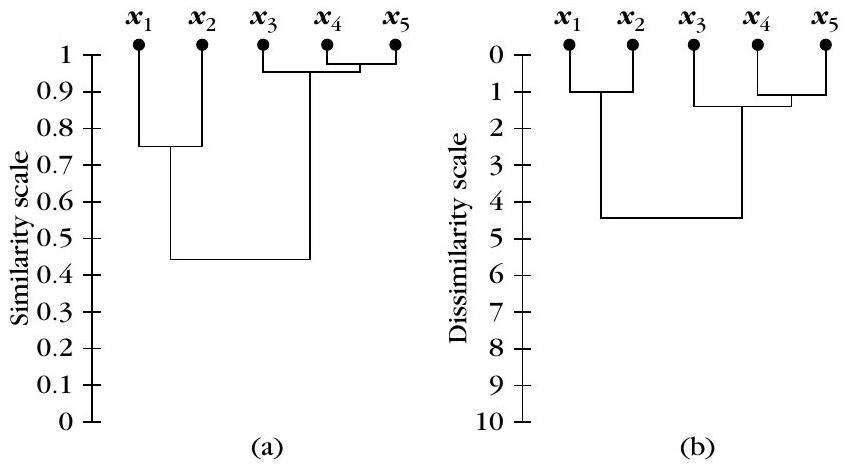
例 13.1 中，歐氏相異度矩陣 $P(X)$ 與 Tanimoto 相似度矩陣 $P'(X)$ 的對角元素分別為何？
例 13.1 以單連 $g=d_{\min}^{ss}$ 與歐氏距離做 GAS，下列合併順序何者正確？
矩陣更新 MUAS 與 Lance–Williams 遞迴
▼一句話
MUAS 是 GAS 的矩陣版：每合併一對叢集，就把相異度矩陣 $P_t$ 刪兩列兩行、加一列一行；Lance–Williams 式 (13.3) 用四個係數統一描述新距離怎麼算。
是什麼
這類演算法可視為 GAS 的特例。輸入是從 $X$ 得到的 $N\times N$ 相異度矩陣 $P_0=P(X)$。第 $t$ 層合併兩叢集後，$P_t$ 變成 $(N-t)\times(N-t)$，由 $P_{t-1}$ 經兩步得到：
- 刪除對應被合併兩叢集的那兩列、兩行；
- 新增一列、一行，填入新叢集 $C_q$ 與其餘舊叢集 $C_s$ 的距離。
新叢集 $C_q=C_i\cup C_j$ 與舊叢集 $C_s$ 的距離一般寫成（式 13.2）：
$$ d(C_q,C_s)=f\bigl(d(C_i,C_s),\, d(C_j,C_s),\, d(C_i,C_j)\bigr) $$
這就是文獻常說的 matrix updating algorithms（矩陣更新演算法）。MUAS（Matrix Updating Algorithmic Scheme）流程：
- 初始化：$\Re_0=\{\{\boldsymbol{x}_i\},\, i=1,\ldots,N\}$，$P_0=P(X)$，$t=0$。
- 重複：$t\leftarrow t+1$；找 $C_i,C_j$ 使 $d(C_i,C_j)=\min_{r\neq s} d(C_r,C_s)$；合併成 $C_q$，更新 $\Re_t$；依上述規則由 $P_{t-1}$ 得 $P_t$。
- 直到 $\Re_{N-1}$ 全部點在同一叢集。
Lance & Williams (1967) 指出許多距離函數符合遞迴更新式（式 13.3）：
$$ \begin{align*} d(C_q,C_s)=&a_i\, d(C_i,C_s)+a_j\, d(C_j,C_s)+b\, d(C_i,C_j) \\ &+c\,\bigl|d(C_i,C_s)-d(C_j,C_s)\bigr| \end{align*} $$
不同的 $a_i,a_j,b,c$ 對應不同的叢集間相異度定義。式 (13.3) 也是從點叢集距離出發、遞迴定義叢集距離；後續單連、全連、WPGMA 等都可由調參數得到。
為什麼
不必每次合併都從原始 $N$ 個點重算所有距離——只更新矩陣中受影響的行列，是矩陣型凝聚演算法效率的關鍵。Lance–Williams 框架把十幾種連結法收斂成「同一個遞迴式、換四個係數」，記憶與比較都方便。
怎麼用 / 怎麼記
- MUAS 核心：$P_t$ 比 $P_{t-1}$ 少一個叢集 → 矩陣維度 $(N-t)\times(N-t)$。
- 更新兩步：刪合併叢集的列行 + 加新叢集 $C_q$ 的列行。
- 式 (13.2)：新距離 $d(C_q,C_s)$ 只依三個舊距離 $d(C_i,C_s)$、$d(C_j,C_s)$、$d(C_i,C_j)$。
- 式 (13.3)：四係數 $a_i,a_j,b,c$ 決定是單連、全連還是中間方案。
MUAS 在第 $t$ 層合併兩叢集後，相異度矩陣 $P_t$ 相對於 $P_{t-1}$ 如何更新？
Lance–Williams 更新式 (13.3) 中，$d(C_q,C_s)$ 由哪些量決定？
單連 vs 全連：細長鏈 vs 緊密團
▼一句話
單連取兩叢集間的最小距離（易形成細長鏈、chaining effect），全連取最大距離（偏好小而緊的叢集）；兩者是 Lance–Williams 族的两個極端。
是什麼
在式 (13.3) 中取特定係數，得到最簡單的兩種演算法：
- 單連（single link）：$a_i=a_j=1/2$，$b=0$，$c=-1/2$。代入後（式 13.4）： $$ d(C_q,C_s)=\min\{d(C_i,C_s),\, d(C_j,C_s)\} $$ 對應 §11.2 的 $d_{\min}^{ss}$ 測度。
- 全連（complete link）：$a_i=a_j=1/2$，$b=0$，$c=1/2$。得到（式 13.5）： $$ d(C_q,C_s)=\max\{d(C_i,C_s),\, d(C_j,C_s)\} $$ 注意 $d(C_i,C_j)$ 本身不出現在這兩個公式裡。
若改用相似度而非相異度：(a) 單連把式 (13.4) 的 min 改成 max；(b) 全連把式 (13.5) 的 max 改成 min。
例 13.2（圖 13.3）：資料含七個點形成細長叢集，另四個點形成緊密叢集；邊上數字是歐氏距離，未標的邊假設距離很大。單連的相異度樹狀圖（圖 13.3b）先恢復細長叢集，緊密叢集在較高相異度層級才出現。全連的樹狀圖（圖 13.3c）先恢復緊密的小叢集。
Remark：單連與全連是式 (13.3) 一族的兩個極端。單連產生的叢集在相異度樹狀圖上出現在低相異度處，因為用 $d(C_i,C_s)$ 與 $d(C_j,C_s)$ 的最小值當 $d(C_q,C_s)$——傾向把只要有一點相近就合併，形成細長叢集，這叫 chaining effect（鏈化效應）。全連用最大值，叢集在高相異度處才形成，偏好小而緊的叢集；若資料底層真的是緊密團塊，全連較合適。其餘演算法（如 WPGMA）介於兩者之間。
為什麼
叢集「長相」不同，連結法就要不同：細長、逐點串連的結構，單連較敏感；彼此緊密、邊界清楚的小團，全連較穩。不了解 chaining effect，可能把本來該分開的兩團用一條細橋誤黏成一大串。
怎麼用 / 怎麼記
- 單連：min，$c=-1/2$ → 低相異度合併 → 細長鏈 → chaining。
- 全連：max，$c=+1/2$ → 高相異度合併 → 緊密小團。
- 相似度對調：相異度的 min↔相似度的 max；相異度的 max↔相似度的 min。
- 例 13.2：七點長條＋四點緊團；單連先抓長條，全連先抓緊團。
- 兩極之間：WPGMA 等是折衷，係數取 $a_i=a_j=1/2,b=0,c=0$。
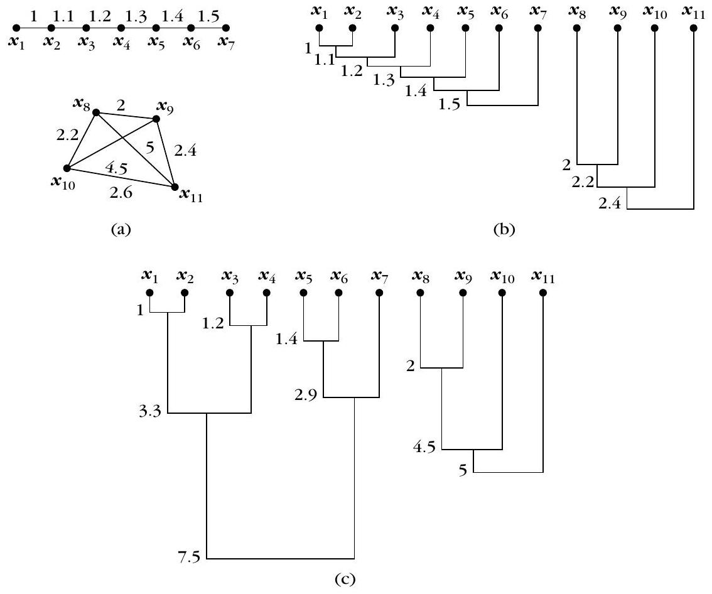
依式 (13.3)，單連演算法的係數與 resulting 叢集距離公式為何？
關於例 13.2 與 chaining effect，下列何者最符合原文？
介於兩極端：平均、重心與 Ward
▼一句話
單連結與全連結是兩個極端；WPGMA、UPGMA、UPGMC、WPGMC 與 Ward 則是介於中間的折衷，差別在於合併時要不要依群大小加權，以及用的是「平均距離」還是「重心距離」。
是什麼
前面學過的單連結（SL）與全連結（CL）是式 (13.3) 的兩個極端。接下來五種演算法則是折衷方案，都屬於矩陣更新凝聚法（MUAS）家族：
- WPGMA（weighted pair group method average，加權配對群平均法）：令 $a_i=a_j=\frac{1}{2}$、$b=0$、$c=0$，新群 $C_q$ 與舊群 $C_s$ 的距離是兩條舊距離的算術平均： $$ \begin{equation*} d\left(C_{q}, C_{s}\right)=\frac{1}{2}\left(d\left(C_{i}, C_{s}\right)+d\left(C_{j}, C_{s}\right)\right) \tag{13.6} \end{equation*} $$
- UPGMA（unweighted pair group method average，不加權配對群平均法）：令 $a_i=\frac{n_i}{n_i+n_j}$、$a_j=\frac{n_j}{n_i+n_j}$、$b=0$、$c=0$，其中 $n_i$、$n_j$ 是 $C_i$、$C_j$ 的向量個數。新距離依群大小加權： $$ \begin{equation*} d\left(C_{q}, C_{s}\right)=\frac{n_i}{n_i+n_j} d\left(C_{i}, C_{s}\right)+\frac{n_j}{n_i+n_j} d\left(C_{j}, C_{s}\right) \tag{13.7} \end{equation*} $$
- UPGMC（unweighted pair group method centroid，不加權配對群重心法）：參數含 $b=-\frac{n_i n_j}{(n_i+n_j)^2}$，更新式為 $$ \begin{equation*} d_{q s}=\frac{n_i}{n_i+n_j} d_{i s}+\frac{n_j}{n_i+n_j} d_{j s}-\frac{n_i n_j}{(n_i+n_j)^2} d_{i j} \tag{13.8} \end{equation*} $$ 若各群代表向量取平均（重心）$\boldsymbol{m}_q=\frac{1}{n_q}\sum_{\boldsymbol{x}\in C_q}\boldsymbol{x}$，且相異度取平方歐氏距離，則 $d_{qs}$ 就是兩群重心的平方歐氏距離： $$ \begin{equation*} d_{q s}=\left\|\boldsymbol{m}_{q}-\boldsymbol{m}_{s}\right\|^{2} \tag{13.10} \end{equation*} $$
- WPGMC（weighted pair group method centroid，加權配對群重心法）：令 $a_i=a_j=\frac{1}{2}$、$b=-\frac{1}{4}$、$c=0$： $$ \begin{equation*} d_{q s}=\frac{1}{2} d_{i s}+\frac{1}{2} d_{j s}-\frac{1}{4} d_{i j} \tag{13.11} \end{equation*} $$ 若兩個被合併的群大小相同，(13.11) 就是 (13.8) 的特例；一般情況下它算的是加權版重心之間的距離。WPGMC 有個值得記的特性：有時會出現 $d_{q s}\le\min(d_{is},d_{js})$。
- Ward（最小變異法）：兩群 $C_i$、$C_j$ 的距離是重心平方歐氏距離的加權版 $$ \begin{equation*} d_{i j}^{\prime}=\frac{n_i n_j}{n_i+n_j} d_{i j}, \quad d_{i j}=\left\|\boldsymbol{m}_{i}-\boldsymbol{m}_{j}\right\|^{2} \tag{13.12} \end{equation*} $$ 合併時選使 $d_{ij}^{\prime}$ 最小的那一對。它也可以寫成 (13.3) 家族的遞迴更新式 (13.13)。直覺上，Ward 每次合併選「合併後總變異增加最少」的一對——令 $e_r^2=\sum_{\boldsymbol{x}\in C_r}\|\boldsymbol{x}-\boldsymbol{m}_r\|^2$ 為第 $r$ 群內變異，$E_t=\sum_{r=1}^{N-t}e_r^2$ 為第 $t$ 層總變異，合併 $C_i$、$C_j$ 造成的增量 $\Delta E_{t+1}^{ij}=e_q^2-e_i^2-e_j^2$ 經推導後正好等於 $d_{ij}^{\prime}$（式 13.15–13.19），因此叫 minimum variance。
weighted vs unweighted 怎麼分？ WPGMA／WPGMC 的「加權」是指合併時對兩個子群給相同權重 $\frac{1}{2}$；UPGMA／UPGMC 的「不加權配對群」則依各群向量個數 $n_i$、$n_j$ 來加權——大群影響力比較大。
average vs centroid 怎麼分？ MA 系列（WPGMA、UPGMA）平均的是「群與群之間的距離」；MC 系列（UPGMC、WPGMC）則先定重心，再算重心之間的（平方）歐氏距離。
例 13.3 的五個向量分成兩個緊密群：$\boldsymbol{x}_1,\boldsymbol{x}_2,\boldsymbol{x}_3$ 彼此很近、$\boldsymbol{x}_4,\boldsymbol{x}_5$ 彼此很近，兩團離很遠。七種演算法產生的樹狀圖結構相同，差別只在各層相異度數值。以平方歐氏距離的相異度矩陣 $P_0$ 為例，各演算法形成叢集的相異度層級如下（表 13.1）：
- $\Re_1$（$\boldsymbol{x}_1$ 與 $\boldsymbol{x}_2$ 合併）：SL、CL、WPGMA、UPGMA、WPGMC、UPGMC 都在 $1$；Ward 在 $0.5$（注意 Ward 初始矩陣要取 $\frac{1}{2}P_0$）。
- $\Re_2$（$\boldsymbol{x}_4$ 與 $\boldsymbol{x}_5$ 合併）：前六種都在 $1.5$；Ward 在 $0.75$。
- $\Re_3$（$\boldsymbol{x}_3$ 併入 $\{\boldsymbol{x}_1,\boldsymbol{x}_2\}$）：SL 在 $2$；CL 在 $3$；WPGMA、UPGMA 在 $2.5$；WPGMC、UPGMC 在 $2.25$；Ward 在 $1.5$。
- $\Re_4$（全部合併）：SL 在 $16$；CL 在 $37$；WPGMA 在 $25.75$；UPGMA 在 $27.5$；WPGMC 在 $24.69$；UPGMC 在 $26.46$；Ward 在 $31.75$。
為什麼
這種「兩群分得很開」的簡單例子，幾乎所有凝聚演算法都分得對；演算法的個性要在更刁鑽的資料上才看得出來（例如例 13.2 單連結偏好細長群、全連結偏好緊密群）。平均法與重心法是 SL 與 CL 之間的折衷：不會像 SL 那樣一路「串鏈」，也不像 CL 那樣只盯最遠的一對。Ward 則直接最小化合併造成的群內變異增量，適合找大小相近、球形緊密的群。
套用 UPGMA、UPGMC、Ward 時，每次合併後要記得依新的群大小調整 $a_i$、$a_j$、$b$、$c$ 等參數——這跟 SL、CL、WPGMA、WPGMC 不同。
怎麼用 / 怎麼記
- 口訣：W 開頭＝weighted（兩群各 $\frac{1}{2}$）；U 開頭＝unweighted pair group（依 $n_i$、$n_j$ 加權）。MA＝平均距離；MC＝重心距離。
- WPGMC 陷阱：新距離可能比兩條舊距離的最小值還小（$d_{qs}\le\min(d_{is},d_{js})$）。
- Ward 兩記法：選最小 $d_{ij}^{\prime}$，等價於選最小 $\Delta E$（總變異增量）。
- 例 13.3 快記：結構七演算法相同；Ward 各層數字約為其他方法的一半（因初始 $\frac{1}{2}P_0$）；最後合併 SL 在 $16$、CL 在 $37$。
例 13.3 中，依表 13.1，$\boldsymbol{x}_1$ 與 $\boldsymbol{x}_2$ 第一次合併（$\Re_1$）時，UPGMA 與 Ward 演算法各自的相異度層級為何？
關於 WPGMA 與 UPGMC，下列哪一項正確？
單調性 vs crossover：後黏的層不能比較早還低
▼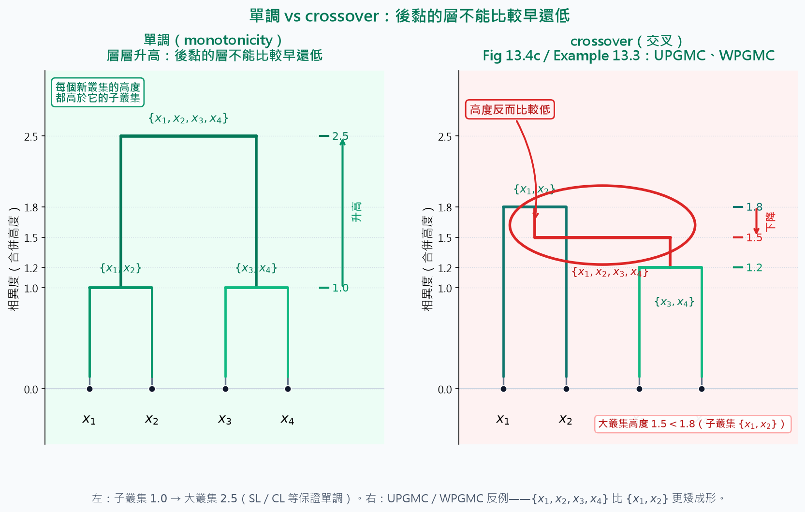
🤖 AI 生圖可用：重繪此示意圖的提示詞（結構化）
# AI 生圖提示詞 — kp-7 單調 vs crossover
## WHAT
畫一張左右對比的示意 dendrogram（相異度樹狀圖）。左「單調（monotonicity）」：子叢集先在高度 1.0 合併，再往上黏成更大叢集、高度 2.5，層層升高。右「crossover（交叉）」對應原文 Fig 13.4c / Example 13.3：大叢集 $\{x_1,x_2,x_3,x_4\}$ 的合併高度反而低於其子叢集 $\{x_1,x_2\}$，並用紅圈標出「高度反而比較低」的那一刀。
## WHY
要傳達的因果／反直覺：樹狀圖縱軸是「多遠才願意合併」，好的樹應該越往上越高。crossover 違反這個直覺——四點大團比其中一對子叢集更早（更矮）成形，解讀起來像「先抱成一團，後來才發現其中兩個其實更親」。遮住文字後仍要能看出：左邊每刀都比上一刀高；右邊最後一刀比 $\{x_1,x_2\}$ 那刀還矮，而且那一刀被紅圈圈住。
## MUST show
- 左右各一棵四葉樹狀圖，葉節點標 $x_1,x_2,x_3,x_4$，縱軸為相異度／合併高度（0 在下、往上增大）。
- 左：兩對子叢集（如 $\{x_1,x_2\}$、$\{x_3,x_4\}$）在高度 1.0 合併，再合併成 $\{x_1,x_2,x_3,x_4\}$ 於高度 2.5；層層升高、沒有往下折返。
- 右：對應 Fig 13.4c——$\{x_3,x_4\}$ 約在 1.2、$\{x_1,x_2\}$ 約在 1.8，四點大叢集卻在更低的高度（約 1.5）成形；從 $\{x_1,x_2\}$ 那刀往下接到父叢集那刀。
- 用紅圈標出右圖「高度反而比較低」的那一刀（四點合併的水平線／往下折返處）。
- 標出叢集名稱與高度數字，讓人能核對「大群高度 < 子叢集 $\{x_1,x_2\}$ 高度」。
## AVOID
- 不要只畫名詞方框用箭頭連起來（名詞連連看）；因果必須由樹狀圖的幾何高度承載。
- 不要把左右兩棵樹畫成同一種單調樹；右圖必須看得見「往下折返」。
- 不要省略紅圈，也不要把紅圈圈在無關的葉節點上。
- 不要套真實 linkage 套件當黑箱而看不出高度；用線段示意即可，但高度關係必須正確。
- 不要加入與單調／crossover 無關的裝飾。
## STYLE
扁平、乾淨的學術示意圖；主題綠 `#059669`／`#047857`，crossover 用紅圈與紅色折返線強調；中文標籤＋ mathtext 叢集符號；白／淺灰底、左右並置對比。一句話
好的樹狀圖應該「越往上合併，相異度越高」——這叫單調性；若後面合出的大叢集反而出現在比它的子叢集更低的層級，就叫 crossover（交叉）。
是什麼
考慮下面這個 $4\times 4$ 相異度矩陣 $P$（用來示範圖 13.4）：
$$ P=\left[\begin{array}{cccc} 0 & 1.8 & 2.4 & 2.3 \\ 1.8 & 0 & 2.5 & 2.7 \\ 2.4 & 2.5 & 0 & 1.2 \\ 2.3 & 2.7 & 1.2 & 0 \end{array}\right] $$
把 SL、CL、UPGMC、WPGMC 分別套上去：
- SL、CL（圖 13.4a、b）：樹狀圖滿足單調性——每個新叢集出現的相異度，都不低於組成它的子叢集。
- UPGMC 與 WPGMC（圖 13.4c，兩者結果相同）：出現 crossover——叢集 $\{\boldsymbol{x}_1,\boldsymbol{x}_2,\boldsymbol{x}_3,\boldsymbol{x}_4\}$ 在比 $\{\boldsymbol{x}_1,\boldsymbol{x}_2\}$ 更低的相異度層級就成形了。直覺上，大群不該比小群更早（更矮）黏在一起。
crossover：某叢集在比它的任何組成部分都低的相異度層級形成。
monotonicity（單調性）：crossover 的反面。若在第 $t$ 層選 $C_i$、$C_j$ 合併成 $C_q$，則對所有 $C_k\neq i,j,q$ 必須成立
$$ d\left(C_{q}, C_{k}\right) \ge d\left(C_{i}, C_{j}\right) $$
白話：新黏好的群，跟外面任何舊群的距離，不能比「當初決定合併 $C_i$、$C_j$ 的那個距離」還小。
單調性是演算法本身的性質，跟初始相異度矩陣長什麼樣無關。
式 (13.3) 的參數 $a_i,a_j,b,c$ 若滿足命題 1的條件（$a_i,a_j\ge 0$、$a_i+a_j+b\ge 1$，且 $c\ge 0$ 或 $\max\{-a_i,-a_j\}\le c\le 0$），該演算法就保證單調。因此：
- 滿足單調：single link、complete link、UPGMA、WPGMA、Ward。
- 不保證單調：UPGMC、WPGMC（圖 13.4c 就是反例）。
注意兩點：命題 1 的條件是充分但非必要——不滿足前提的演算法仍可能單調；UPGMC／WPGMC 不保證單調，也不代表每次都會 crossover。文獻有人批評不保證單調的演算法，但也有人指出：滿足單調也不代表結果一定好——最終還是看應用場景。
為什麼
樹狀圖的縱軸代表「多遠才願意合併」。若大群比小群更早出現（crossover），解讀起來會很怪：好像四個人先抱成一團，後來才發現其中兩個其實更親。單調性讓樹狀圖的層級有清楚的時間順序——越往上越「勉強才合併」。重心法（UPGMC、WPGMC）因為更新公式裡有減項（例如 $-\frac{n_i n_j}{(n_i+n_j)^2}d_{ij}$），可能把新距離拉低，因而違反單調。
怎麼用 / 怎麼記
- crossover 判斷：子叢集在較高（相異度較大）的層級，父叢集卻在較低（相異度較小）的層級——就交叉了。
- 誰單調：SL、CL、UPGMA、WPGMA、Ward 單調；UPGMC、WPGMC 不保證。
- 圖 13.4 快記：UPGMC／WPGMC 對上面那個 $P$，$\{\boldsymbol{x}_1,\boldsymbol{x}_2,\boldsymbol{x}_3,\boldsymbol{x}_4\}$ 比 $\{\boldsymbol{x}_1,\boldsymbol{x}_2\}$ 更早成形——典型 crossover。
- 實務：若很在意樹狀圖可解讀性，避開可能 crossover 的重心法；若資料適合重心法且結果合理，crossover 不一定致命。
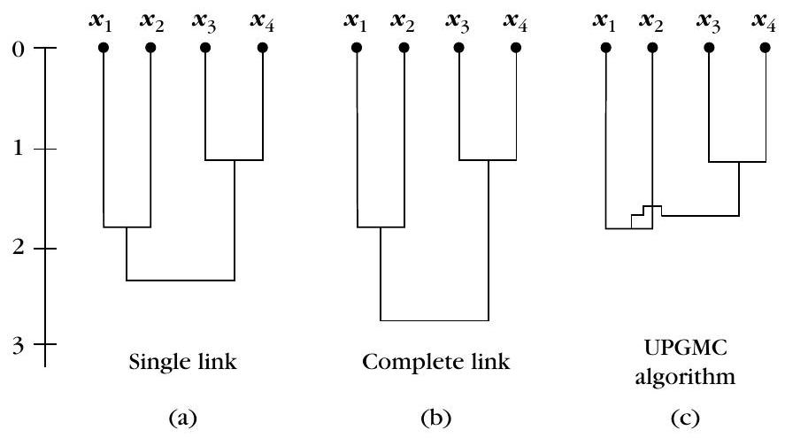
依命題 1 與原文，下列哪些演算法保證滿足單調性？
圖 13.4c 中 UPGMC／WPGMC 的 crossover 現象是指什麼？
threshold graph：距離小於 $a$ 才連邊
▼一句話
把每個資料點當圖的節點，只有相異度 $\le a$ 的兩點才連邊——這張圖叫 threshold graph $G(a)$；若邊上還標相異度值，就叫 proximity graph $G_p(a)$。
是什麼
在進入圖論版凝聚演算法之前，先複習幾個圖論名詞（圖 13.5）：
- 圖 $G=(V,E)$：$V$ 是節點（頂點）集合，$E$ 是邊集合。分群裡每個節點對應一個特徵向量。
- 路徑：從 $v_{i_1}$ 到 $v_{i_n}$ 依序經過節點與邊的序列（圖 13.5a）。
- 迴圈（loop）：起點與終點相同的路徑（圖 13.5b）；連到自己身上的邊叫自迴圈。
- 連通（connected）：子圖中任意兩節點之間至少有一條路徑（圖 13.5c）。
- 完全（complete）：子圖中每個節點都與其他所有節點相連（圖 13.5d）。
- 極大連通子圖：在仍保持連通的前提下，盡可能包含原圖最多節點的子圖（圖 13.5e）。
- 極大完全子圖：在仍保持完全的前提下，盡可能包含原圖最多節點的子圖（圖 13.5f）。
threshold graph（門檻圖）：給相異度門檻 $a$，在 $N$ 個節點（對應資料集 $X$ 的 $N$ 個向量）上建無向、無權圖 $G(a)$——節點 $i$ 與 $j$ 之間有邊，若且唯若
$$ \begin{equation*} \left(v_{i}, v_{j}\right) \in G(a), \quad \text{若 } d\left(\boldsymbol{x}_{i}, \boldsymbol{x}_{j}\right) \le a \tag{13.20} \end{equation*} $$
沒有自迴圈，任意兩點之間最多一條邊。若改用相似度，則條件改成 $s(\boldsymbol{x}_i,\boldsymbol{x}_j)\ge a$。
proximity graph（接近圖） $G_p(a)$：在 $G(a)$ 的每條邊上，再標上 $\boldsymbol{x}_i$ 與 $\boldsymbol{x}_j$ 之間的接近測度值。用相異度建的就叫相異度接近圖，用相似度建的就叫相似度接近圖。
例 13.1 與圖 13.6：五個二維點 $\boldsymbol{x}_1=[1,1]^T$、$\boldsymbol{x}_2=[2,1]^T$、$\boldsymbol{x}_3=[5,4]^T$、$\boldsymbol{x}_4=[6,5]^T$、$\boldsymbol{x}_5=[6.5,6]^T$。以歐氏距離得相異度矩陣 $P(X)$：
$$ P(X)=\left[\begin{array}{ccccc} 0 & 1 & 5 & 6.4 & 7.4 \\ 1 & 0 & 4.2 & 5.7 & 6.7 \\ 5 & 4.2 & 0 & 1.4 & 2.5 \\ 6.4 & 5.7 & 1.4 & 0 & 1.1 \\ 7.4 & 6.7 & 2.5 & 1.1 & 0 \end{array}\right] $$
- $G(3)$：只連相異度 $\le 3$ 的點對。$d(\boldsymbol{x}_1,\boldsymbol{x}_2)=1$ 有邊；$\boldsymbol{x}_3,\boldsymbol{x}_4,\boldsymbol{x}_5$ 之間 $d(\boldsymbol{x}_3,\boldsymbol{x}_4)=1.4$、$d(\boldsymbol{x}_4,\boldsymbol{x}_5)=1.1$、$d(\boldsymbol{x}_3,\boldsymbol{x}_5)=2.5$ 都有邊，形成一個三點連通子圖；但 $\boldsymbol{x}_1,\boldsymbol{x}_2$ 與 $\boldsymbol{x}_3,\boldsymbol{x}_4,\boldsymbol{x}_5$ 之間最近的跨群距離是 $4.2$（$\boldsymbol{x}_2$ 與 $\boldsymbol{x}_3$），超過 $3$，所以圖分成兩個連通分量：$\{\boldsymbol{x}_1,\boldsymbol{x}_2\}$ 與 $\{\boldsymbol{x}_3,\boldsymbol{x}_4,\boldsymbol{x}_5\}$。
- $G(5)$：門檻放寬到 $5$，$d(\boldsymbol{x}_2,\boldsymbol{x}_3)=4.2\le 5$ 也連上了，$\boldsymbol{x}_1$ 經 $\boldsymbol{x}_2$ 可走到 $\boldsymbol{x}_3$，整張圖變成一個連通圖——五個點全部串在一起。$G_p(5)$ 則在這些邊上標上各自的歐氏距離。
為什麼
threshold graph 把「相異度門檻」翻譯成「誰跟誰有邊」，讓分群可以用圖的連通性、完全性等性質來描述。門檻 $a$ 越小，邊越少、連通分量越多；$a$ 越大，邊越多、越容易全連通。這是後面 GTAS（圖論凝聚演算法）的基礎語言。
怎麼用 / 怎麼記
- 建圖口訣：相異度 $\le a$ 才連邊；$a$ 小→碎；$a$ 大→黏。
- $G(a)$ vs $G_p(a)$：前者無權，後者邊上有測度值。
- 例 13.1：$G(3)$ 兩團（$\{1,2\}$ 與 $\{3,4,5\}$）；$G(5)$ 五點全連通。
- 極大連通 vs 完全：連通只要求「走得到」；完全要求「每對都直接有邊」——完全比連通嚴格得多。
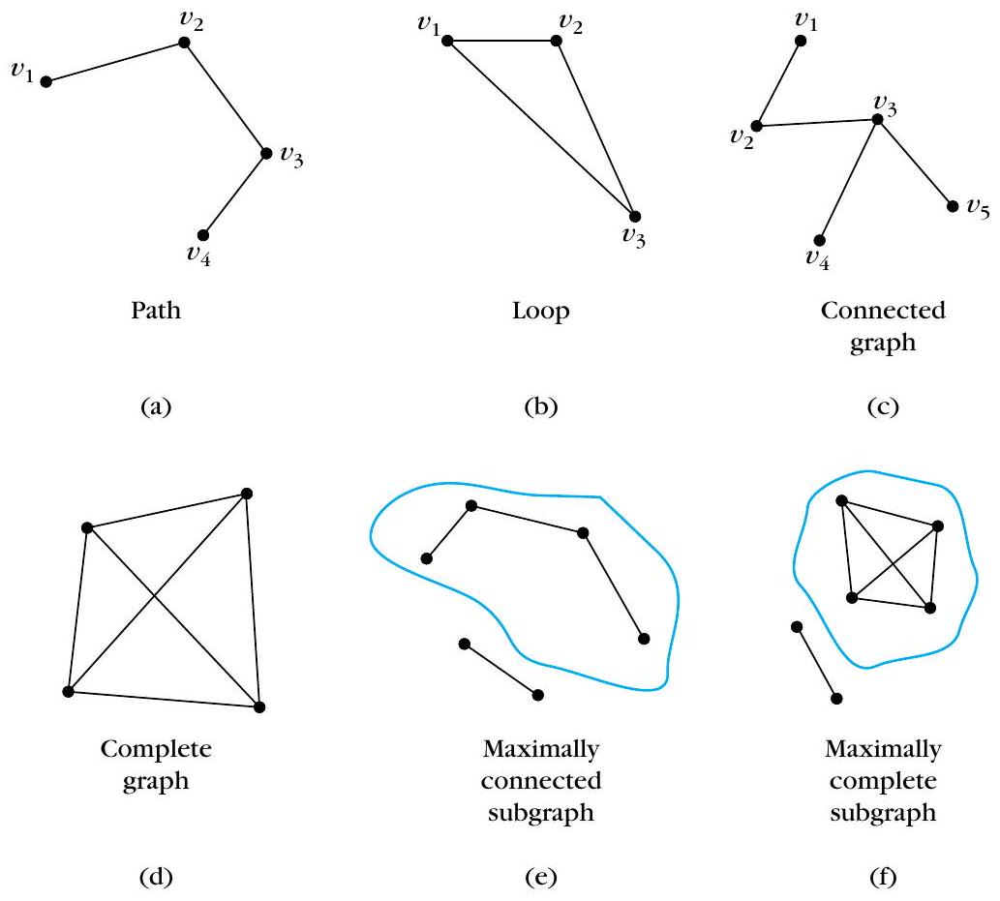
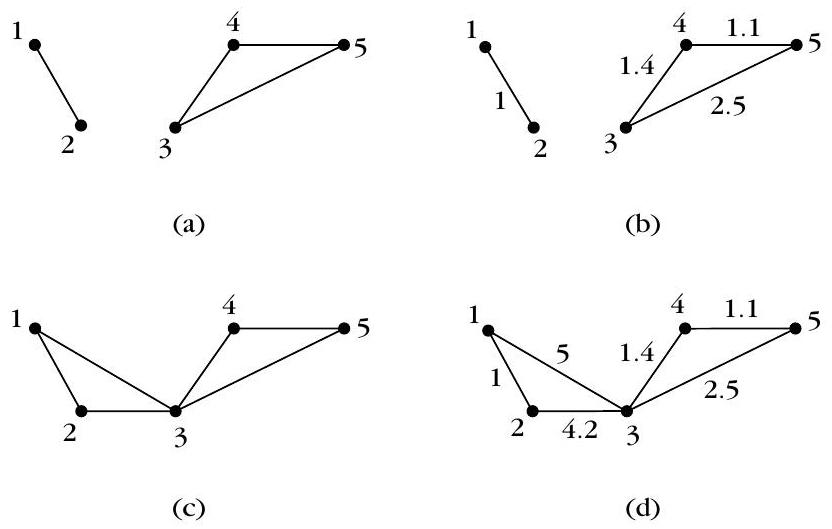
例 13.1 以歐氏距離建 threshold graph $G(3)$ 時，下列哪一項正確？
threshold graph $G(a)$ 中，節點 $i$ 與 $j$ 之間有邊的條件是？（以相異度為測度）
圖論凝聚 GTAS：單連最鬆、全連最緊
▼一句話
GTAS 把凝聚分群改寫成圖的語言：單連結只要求合併後子圖連通（最鬆），全連結要求合併後子圖完全（最緊），中間則用圖性質 $h(k)$ 來調整嚴格程度。
是什麼
GTAS（graph theory-based algorithmic scheme，圖論凝聚演算法）跟 GAS 步驟相同，唯一差別在第 2.2 步：把 $g(C_i,C_j)$ 換成 $g_{h(k)}(C_i,C_j)$。合併兩個叢集 $C_r$、$C_s$ 時，$g_{h(k)}$ 定義為：在所有使 $C_r\cup C_s$ 在 $G(a)$ 中連通的相異度 $a$ 裡，取 $C_r$ 中某點與 $C_s$ 中某點之間的最小相異度，且合併後的子圖還要（b1）滿足圖性質 $h(k)$，或（b2）是完全子圖（式 13.22）。相異度函數取最小、相似度函數取最大（式 13.21）。
常用的圖性質 $h(k)$ 包括（圖 13.8 中三種性質的 $k$ 都等於 $3$）：
- 節點度（node degree）：連通子圖中，每個節點至少連 $k$ 條邊。
- 節點連通度（node connectivity）：任意兩節點之間至少有 $k$ 條不共用節點的路徑。
- 邊連通度（edge connectivity）：任意兩節點之間至少有 $k$ 條不共用邊的路徑。
當 $k=1$ 時，三種性質都退化成單連結；$k$ 越大，要求的子圖越接近完全。
單連結（圖論版）：只要求合併後連通，不強制 $h(k)$ 或完全性。化簡後就是兩群之間的最小點距離（式 13.23–13.24），跟矩陣版 SL 結果相同。
全連結（圖論版）：只要求合併後子圖完全。化簡後就是兩群之間的最大點距離（式 13.25），跟矩陣版 CL 結果相同。連通比完全寬鬆，所以 SL 是最鬆的合併準則，CL 是最緊的。
例 13.4（單連結 GTAS）：五點相異度矩陣 $P$ 的最小非對角元素是 $1.2$（$\boldsymbol{x}_1$ 與 $\boldsymbol{x}_2$），第一次合併在 $g=1.2$：
$$ \Re_1=\left\{\left\{\boldsymbol{x}_{1}, \boldsymbol{x}_{2}\right\},\left\{\boldsymbol{x}_{3}\right\},\left\{\boldsymbol{x}_{4}\right\},\left\{\boldsymbol{x}_{5}\right\}\right\} $$
接著 $\boldsymbol{x}_4,\boldsymbol{x}_5$ 在 $1.5$ 合併得 $\Re_2$；$\boldsymbol{x}_3$ 與 $\{\boldsymbol{x}_4,\boldsymbol{x}_5\}$ 在 $1.8$ 合併得 $\Re_3$；最後兩大群在 $2.5$ 合併得 $\Re_4$。注意在 $G(2.0)$ 時還沒有形成新的叢集。
全連結對同一 $P$：$\Re_0$、$\Re_1$、$\Re_2$ 跟 SL 相同（分別在 $G(0)$、$G(1.2)$、$G(1.5)$ 形成），但 $\Re_3$ 要等到 $G(2.0)$——因為 $\{\boldsymbol{x}_3\}\cup\{\boldsymbol{x}_4,\boldsymbol{x}_5\}$ 在 $G(2.0)$ 才第一次變完全（$g=2$），比 SL 的 $1.8$ 晚。最後 $\Re_4$ 在 $G(4.2)$ 形成。
例 13.5（$h(k)$ 比較，$k=2$）：七點相異度矩陣 $P(X)$ 的 $G(13)$ 接近圖把所有點都串起來。取 $k=2$ 時，三種 $h(k)$ 產生不同的樹狀圖（圖 13.10a–c）：
- 節點度 $h(2)$（圖 13.10a）：相異度 $1$ 時 $\boldsymbol{x}_1,\boldsymbol{x}_2$ 合併（$G(1)$ 已完全，雖然 $h(2)$ 還沒滿足）；$2$ 時 $\boldsymbol{x}_6,\boldsymbol{x}_7$；$4$ 時 $\boldsymbol{x}_5$ 併入 $\{\boldsymbol{x}_6,\boldsymbol{x}_7\}$；$6$ 時 $\boldsymbol{x}_4$–$\boldsymbol{x}_7$ 同群（滿足 $h(2)$ 但未完全）；$9$ 時 $\boldsymbol{x}_1$–$\boldsymbol{x}_3$ 同群；最終在 $10$ 才全部合併（因為 $9$ 時圖還不連通）。
- 節點連通度 $h(2)$（圖 13.10b）：樹狀圖結構不同。
- 邊連通度 $h(2)$（圖 13.10c）：又是另一張樹狀圖。
例 13.6（$k=3$ vs $k=2$）：同例 13.5 的 $P(X)$，改取節點度 $h(3)$（圖 13.11）。跟圖 13.10a（$k=2$）比，相同的叢集會在更大的相異度層級才形成——門檻 $k$ 越高，合併越晚、越嚴格。
為什麼
GTAS 把 SL 與 CL 放進同一個框架：SL 只問「連不連通」，CL 問「完不完全」，中間用 $h(k)$ 連續調整。好處是概念統一、容易理解「鬆緊」光譜；代價是 $h(k)$ 的 $k$ 怎麼選，同樣沒有放諸四海皆準的答案。
怎麼用 / 怎麼記
- 光譜：SL（連通）最鬆 → $h(k)$ 中等 → CL（完全）最緊。
- 例 13.4 快記：SL 第一次合併 $g=1.2$（$\boldsymbol{x}_1,\boldsymbol{x}_2$）；$G(2.0)$ 時 SL 還沒新叢集，CL 才在 $G(2.0)$ 形成 $\Re_3$。
- 例 13.5 快記：$k=2$ 時三種 $h(k)$ 樹狀圖各不同；$k=1$ 全部變 SL。
- 例 13.6 快記：$k=3$ 比 $k=2$ 同一叢集成形層級更高（相異度更大）。
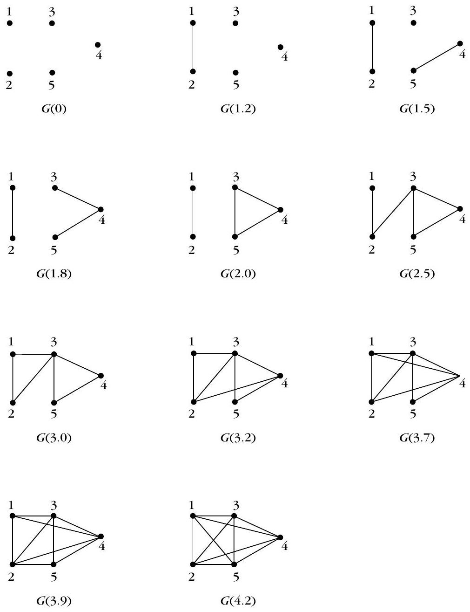
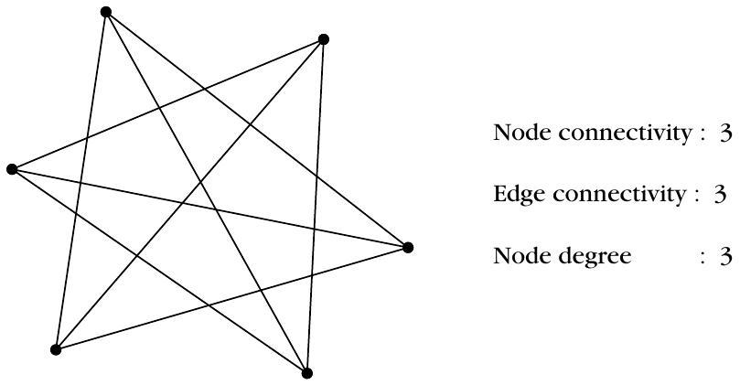
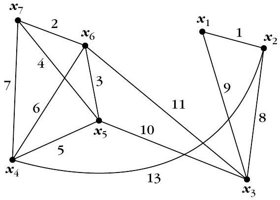
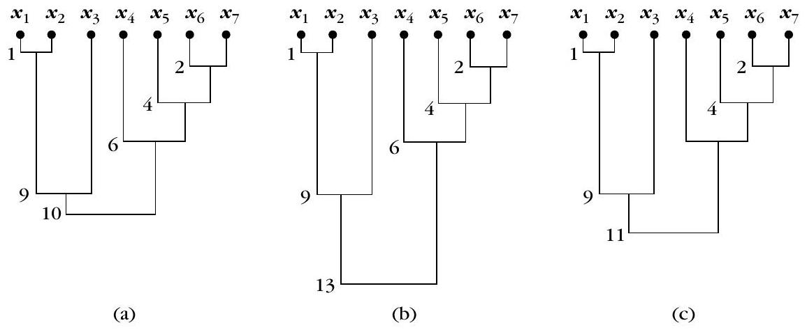
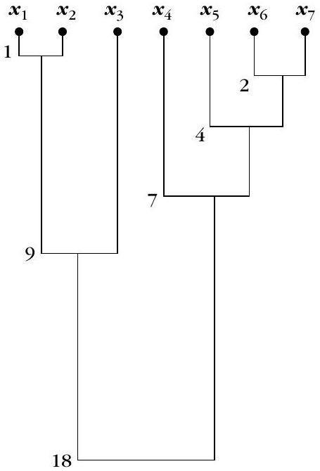
例 13.4 以單連結 GTAS 處理時，第一次合併的 $g_{h(k)}$ 值與結果為何？
例 13.5 與例 13.6 關於 $h(k)$ 的敘述，下列哪一項正確？
最小生成樹 MST 分群：剪最長邊就切群
▼一句話
從接近圖建一棵權重最小的生成樹（MST），由短到長加邊、不形成迴圈，得到的階層跟單連一樣；要切成幾群，就把最長的那幾條邊剪掉。
是什麼
生成樹（spanning tree）：一張連通圖，含圖上全部頂點，而且沒有迴圈——任兩點之間只剩一條路。若邊上有權重，生成樹的權重就是它所有邊權的總和。最小生成樹 MST 是所有生成樹裡權重最小的那一棵。可用 Prim 或 Kruskal 算出來。同一張圖可能有不只一棵 MST；但若所有邊權都不相同，MST 就唯一。這裡的邊權來自接近矩陣 $P(X)$。
找 MST 也可看成 GTAS 的特例：把 $g_{h(k)}(C_r,C_s)$ 換成
$$ \begin{equation*} g(C_r,C_s)=\min_{ij}\{w_{ij}:\,\boldsymbol{x}_i\in C_r,\,\boldsymbol{x}_j\in C_s\} \tag{13.26} \end{equation*} $$
其中 $w_{ij}=d(\boldsymbol{x}_i,\boldsymbol{x}_j)$。白話：兩團之間最短的那一條邊，就是 MST 用來把兩塊子圖接起來的那條。
MST 建好之後，階層這樣讀：第 $t$ 層的叢集，就是「只留下 MST 上最短的 $t$ 條邊」時，圖的連通分量。想一想就會發現：只要 $X$ 裡任兩點距離都不相同，這套階層跟單連完全一樣。所以 MST 是單連的另一種實作，常常還比較省計算。
例 13.7 的相異度矩陣為
$$ P=\begin{bmatrix}0&1.2&4.0&4.6&5.1\\1.2&0&3.5&4.2&4.7\\4.0&3.5&0&2.2&2.8\\4.6&4.2&2.2&0&1.6\\5.1&4.7&2.8&1.6&0\end{bmatrix} $$
邊權都不相同，所以 MST 唯一。由短到長加邊、跳過會成迴圈的邊，得到四條 MST 邊：$(\boldsymbol{x}_1,\boldsymbol{x}_2)=1.2$、$(\boldsymbol{x}_4,\boldsymbol{x}_5)=1.6$、$(\boldsymbol{x}_3,\boldsymbol{x}_4)=2.2$、$(\boldsymbol{x}_2,\boldsymbol{x}_3)=3.5$（圖 13.12a）。對應的相異度樹狀圖是圖 13.12b：先黏 $1.2$，再 $1.6$，再 $2.2$，最後 $3.5$ 把兩大團接成一整棵。一棵 MST 就唯一決定了單連的樹狀圖。
為什麼
單連每一步都在接「目前最近的兩團」。Kruskal 由短到長加邊、不形成迴圈，做的是同一件事，所以階層相同。MST 只有 $N-1$ 條邊，剪最長邊就能切群，不必每次重掃整張接近矩陣。例 13.7 邊權全不同，MST 唯一，樹狀圖也就沒有歧義。
怎麼用 / 怎麼記
- 口訣：由短到長加邊（不成迴圈）＝單連；剪最長邊＝切群。
- 層級 $t$：只留 MST 最短的 $t$ 條邊，連通分量就是那一層的叢集。
- 唯一性：邊權都不同 → MST 唯一；有相同邊權 → 可能不只一棵。
- 例 13.7：加邊順序 $1.2\to 1.6\to 2.2\to 3.5$；圖 13.12a 是樹，13.12b 是樹狀圖。
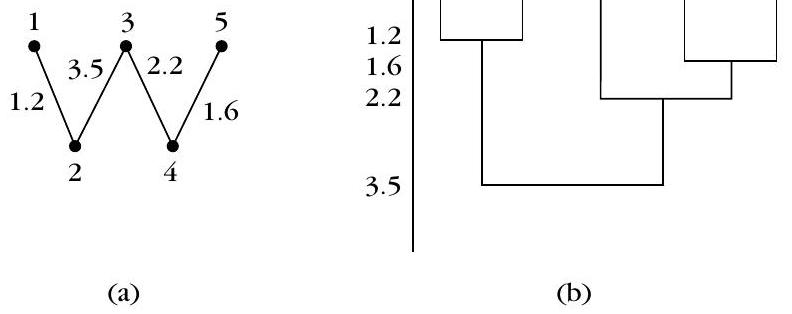
在所有兩兩距離都不相同的前提下，由 MST 得到的分群階層與哪種演算法相同？
關於 MST 是否唯一，以及例 13.7，下列哪一項正確？
接近矩陣平手：單連穩、全連看邊的順序
▼一句話
接近矩陣上三角出現相同數字（平手）時，單連不管先走哪一條平手邊，樹狀圖都一樣；全連就可能因邊的先後順序而長出不同的樹。
是什麼
特徵若是區間或比率尺度，一個點剛好跟另外兩點等距，實務上機率很小。換成順序尺度，這種平手就不可忽略。平手代表 $P$ 主對角線上方至少有兩個相同元素。
例 13.8 的相異度矩陣為
$$ P=\begin{bmatrix}0&4&9&6&5\\4&0&3&8&7\\9&3&0&3&2\\6&8&3&0&1\\5&7&2&1&0\end{bmatrix} $$
注意 $P(2,3)=P(3,4)=3$。對應的相異度圖 $G(9)$ 是圖 13.13a。
- 單連：圖 13.13b。兩條平手邊先考慮哪一條都沒差，樹狀圖不變。
- 全連：先考慮邊 $(3,4)$ 得到圖 13.13c；先考慮邊 $(2,3)$ 得到圖 13.13d。兩張樹狀圖不一樣。
接著把 $P$ 的 $P(1,2)$ 與 $P(2,3)$ 對調，得到新矩陣 $P_1$。圖 13.14a 是 $P_1$ 的單連樹狀圖；圖 13.14b 是全連。這次全連不論先考慮 $(1,2)$ 還是 $(3,4)$，樹狀圖都相同——平手換成另一對之後，全連又變穩了。
結論：單連對平手最可靠，永遠得到同一張接近樹狀圖。全連（以及介於單連與全連之間的其他圖論演算法）可能因處理平手的順序而得到不同結果。矩陣型演算法也有同樣趨勢，而且平手還可能在較後面的更新矩陣才出現。比「連通」或單連更新式 (13.4) 更多的要求，都會帶來歧義、讓結果吃順序。這並不表示其他演算法比較差——誰表現好仍取決於問題；但若不用單連，平手就要特別小心處理。
為什麼
單連只問「有沒有一條夠短的邊把兩團接起來」，兩條一樣短的邊先走哪條，最後接起來的層級相同。全連問的是「最遠的那對有沒有被罩住」，先把哪一對鎖進同一團，後面的 max 距離就會被帶歪，樹就分叉成 13.13c 與 13.13d。換成 $P_1$ 後，平手對換成 $(1,2)$ 與 $(3,4)$，剛好不再踩到全連的敏感處，所以又穩了。
怎麼用 / 怎麼記
- 口訣：單連穩、全連看邊的順序。
- 平手訊號：$P$ 上三角有兩個相同數字，例如 $P(2,3)=P(3,4)$。
- 圖 13.13：單連只有 13.13b 一張；全連有 13.13c（先 $(3,4)$）與 13.13d（先 $(2,3)$）兩張。
- 換成 $P_1$：對調 $P(1,2)$ 與 $P(2,3)$ 後，全連對 $(1,2)$／$(3,4)$ 的先後不再敏感（圖 13.14b）。
- 實務：不用單連時，先檢查 $P$ 有沒有平手，並固定處理順序。
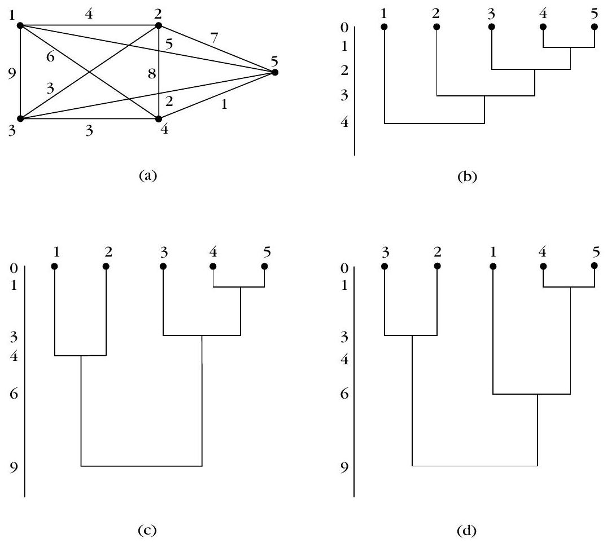
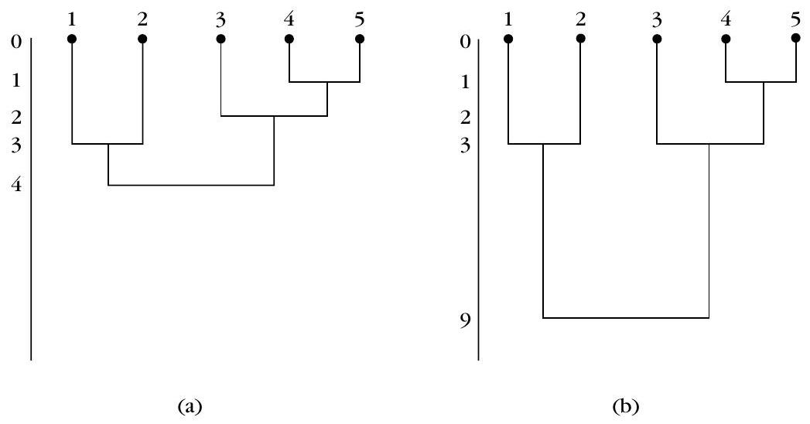
例 13.8 中 $P(2,3)=P(3,4)$。單連演算法對這組平手的行為是？
同一例中，全連先考慮邊 $(3,4)$ 與先考慮邊 $(2,3)$，以及改用 $P_1$ 之後，下列哪一項正確？
共表型矩陣：第一次黏在一起的高度
▼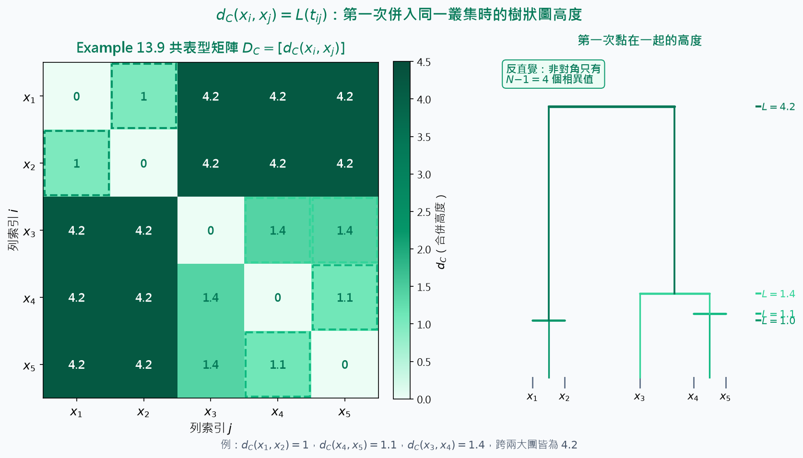
🤖 AI 生圖可用：重繪此示意圖的提示詞（結構化）
# kp12 生圖提示詞：Example 13.9 共表型矩陣 D_C
## WHAT
畫 Example 13.9 的共表型矩陣 $D_C$ 熱圖（列/行順序 $x_1..x_5$），每格填入正確數字；右側並排簡化樹狀圖，標出第一次黏在一起的四個合併高度 $1$、$1.1$、$1.4$、$4.2$。
## WHY
讓讀者理解 $d_C(\boldsymbol{x}_i,\boldsymbol{x}_j)=L(t_{ij})$：共表型距離就是兩點第一次併入同一叢集時的樹狀圖高度。反直覺在於：非對角元素幾乎只有 $N-1=4$ 個相異值（$1$、$1.1$、$1.4$、$4.2$），平手很多——這是超度量矩陣的特徵。
## MUST show
- $5\times5$ 熱圖，數值必須完全正確（對角 $0$；$x_1$–$x_2$ 為 $1$；$x_4$–$x_5$ 為 $1.1$；$x_3$ 與 $x_4/x_5$ 為 $1.4$；跨兩大團皆 $4.2$）。
- 右側樹狀圖依序標 $L=1$（$\{x_1,x_2\}$）、$L=1.1$（$\{x_4,x_5\}$）、$L=1.4$（$x_3$ 加入）、$L=4.2$（兩大團合併）。
- 用色塊分組 + 高度階梯，遮住文字標籤後仍看得出「同一合併高度 → 同一顏色區塊」的因果。
- 標題含 $D_C=[d_C(x_i,x_j)]$ 與公式 $d_C=L(t_{ij})$。
## AVOID
- 不要編造矩陣數字；必須與 Example 13.9 完全一致。
- 不要只畫樹狀圖而缺熱圖，或熱圖缺數字標註。
- 不要畫成一般距離矩陣（連續漸層很多相異值）；要凸顯「只有 4 個相異非對角值」。
- 不要用非 emerald 色系；主色 #059669 / #047857。
## STYLE
乾淨學術示意圖，emerald 主題色，中文標籤，公式用 mathtext，左熱圖右樹狀圖並排，淺灰背景。一句話
共表型距離 $d_C(\boldsymbol{x}_i,\boldsymbol{x}_j)$ 就是 $\boldsymbol{x}_i$ 與 $\boldsymbol{x}_j$ 第一次被併進同一叢集時，樹狀圖上的那個高度 $L(t_{ij})$；整張表叫共表型矩陣 $D_C$，階層演算法就是把接近矩陣 $P$ 映成 $D_C$。
是什麼
令 $\Re_{t_{ij}}$ 為 $\boldsymbol{x}_i$ 與 $\boldsymbol{x}_j$ 第一次落在同一叢集的那一層（之後它們會一直待在一起），$L(t_{ij})$ 是該層的接近度高度。定義
$$ d_C(\boldsymbol{x}_i,\boldsymbol{x}_j)=L(t_{ij}) $$
在單調（monotonicity）的前提下，$d_C$ 是一種度量。第 11 章那五條都成立：非負且有限（最小值為 $0$，因 $L(0)=0$）；$d_C(\boldsymbol{x},\boldsymbol{x})=0$；對稱；且 $d_C(\boldsymbol{x},\boldsymbol{y})=0\Leftrightarrow\boldsymbol{x}=\boldsymbol{y}$（第 $0$ 層每個叢集都是單點）。三角不等式也成立，而且更強：對三點 $(\boldsymbol{x}_i,\boldsymbol{x}_j,\boldsymbol{x}_r)$，令 $t_1=\max\{t_{ij},t_{jr}\}$、$L_1=\max\{L(t_{ij}),L(t_{jr})\}$，由巢狀性，第 $t_1$ 層三點已在同一叢集；再加單調，就有
$$ \begin{equation*} d_C(\boldsymbol{x}_i,\boldsymbol{x}_r)\leq\max\{d_C(\boldsymbol{x}_i,\boldsymbol{x}_j),\, d_C(\boldsymbol{x}_j,\boldsymbol{x}_r)\} \tag{13.27} \end{equation*} $$
這叫超度量不等式（ultrametric inequality），比普通三角不等式更嚴。三個距離裡永遠有兩個相等，取決於哪一對先黏在一起。單調保證超度量，超度量再推出三角不等式。
共表型矩陣 $D_C(X)=[d_C(\boldsymbol{x}_i,\boldsymbol{x}_j)]=[L(t_{ij})]$。它對稱；對角全是 $0$；非對角只有 $N-1$ 個相異值（平手很多）。$D_C$ 是一種特殊的相異度矩陣，因為 $d_C$ 滿足超度量。因此，階層演算法可以看成：把資料的接近矩陣 $P$ 映到一張共表型矩陣 $D_C$。這張表在第 16 章會用來驗證階層好不好。
例 13.9 對應圖 13.2b（例 13.1 的歐氏相異度樹狀圖，單連）：$\boldsymbol{x}_1$ 與 $\boldsymbol{x}_2$ 在高度 $1$ 黏住，$\boldsymbol{x}_4$ 與 $\boldsymbol{x}_5$ 在 $1.1$ 黏住，$\boldsymbol{x}_3$ 在 $1.4$ 加入 $\{\boldsymbol{x}_4,\boldsymbol{x}_5\}$，最後兩大團在 $4.2$ 合併。於是
$$ D_C=\begin{bmatrix}0&1&4.2&4.2&4.2\\1&0&4.2&4.2&4.2\\4.2&4.2&0&1.4&1.4\\4.2&4.2&1.4&0&1.1\\4.2&4.2&1.4&1.1&0\end{bmatrix} $$
例如 $d_C(\boldsymbol{x}_1,\boldsymbol{x}_2)=1$、$d_C(\boldsymbol{x}_4,\boldsymbol{x}_5)=1.1$。非對角的相異值正好四個：$1$、$1.1$、$1.4$、$4.2$，符合 $N-1=4$。
為什麼
樹狀圖的高度是「什麼時候第一次變成一家人」。把每個點對的這個高度寫進矩陣，後面要檢查階層像不像原始 $P$，就有一張表可以對。超度量 (13.27) 比三角不等式更苛刻：三點裡，最晚黏上的那對距離，不會超過另外兩對裡較大的那個——這正是「先黏的一直待在一起」的數字版。
怎麼用 / 怎麼記
- 口訣：$d_C$＝第一次黏在一起的高度。
- 單調 $\Rightarrow$ 超度量 (13.27) $\Rightarrow$ 三角不等式。
- 形狀：對角 $0$，非對角只有 $N-1$ 個相異值。
- 階層演算法：$P\mapsto D_C$。
- 例 13.9：$d_C(\boldsymbol{x}_1,\boldsymbol{x}_2)=1$，$d_C(\boldsymbol{x}_4,\boldsymbol{x}_5)=1.1$，$d_C(\boldsymbol{x}_3,\boldsymbol{x}_4)=1.4$，跨兩大團都是 $4.2$。
例 13.9（對應圖 13.2b）中，共表型距離 $d_C(\boldsymbol{x}_1,\boldsymbol{x}_2)$ 等於多少？
同一張 $D_C$ 裡，$d_C(\boldsymbol{x}_4,\boldsymbol{x}_5)$ 等於多少？
分裂演算法：從整團往下切，組合爆炸
▼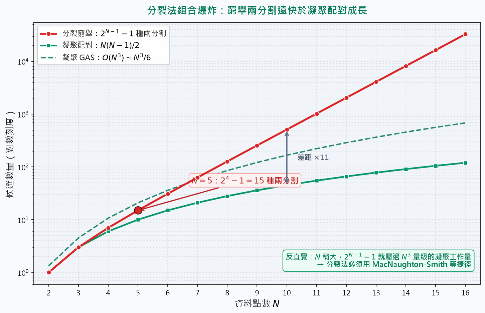
🤖 AI 生圖可用：重繪此示意圖的提示詞（結構化）
# kp13 生圖提示詞：分裂法窮舉兩分割的組合爆炸
## WHAT
畫一張對數刻度成長曲線圖：$x$ 軸 $N=2..16$，$y$ 軸比較分裂窮舉 $2^{N-1}-1$ 與凝聚工作量 $N(N-1)/2$ 或 $N^3/6$；對 $N=5$ 標註 $15$ 種兩分割。
## WHY
分裂法從整團往下切，每一步要在一個叢集的所有兩分割裡挑最好的一刀；窮舉 $N$ 點的兩分割有 $2^{N-1}-1$ 種，比凝聚 GAS 的 $N^3$ 量級配對還兇，這就是分裂法的主要計算瓶頸，也是 MacNaughton-Smith 等捷徑存在的理由。
## MUST show
- 紅色指數曲線 $2^{N-1}-1$，陡升最明顯。
- 綠色較平緩曲線 $N(N-1)/2$ 與/或虛線 $N^3/6$（凝聚 GAS 量級）。
- $N=5$ 處標 $2^4-1=15$，用箭頭或標籤突出。
- 對數 $y$ 軸，讓 $N=10$ 時 $511$ vs $45$ 的數量級差距一眼可見。
- 遮住文字後，紅線遠高於綠線的幾何對比仍清楚。
## AVOID
- 不要用線性 $y$ 軸把指數爆炸畫成「看起來沒多高」。
- 不要只畫 $2^{N-1}-1$ 而缺凝聚對比曲線。
- 不要誤標為 $2^N$ 或 $N-1$；原文是 $2^{N-1}-1$。
- 不要畫 MacNaughton-Smith 流程圖取代成長曲線（那是文字內容，不是本圖重點）。
## STYLE
乾淨學術曲線圖，emerald #059669 / #047857 給凝聚曲線，紅色給分裂爆炸，對數刻度，中文標籤，mathtext 公式。一句話
分裂法從 $\Re_0=\{X\}$ 開始，每次把目前某一團切成兩塊，一路切到 $N$ 個單點；窮舉一種兩分割有 $2^{N-1}-1$ 種，所以會組合爆炸，實務上要用捷徑（例如 MacNaughton-Smith）。
是什麼
分裂走凝聚的反方向：第一層只有一個集合 $X$；第一步在 $X$ 的所有兩分割裡找最好的一刀，切成兩叢集；然後對切出來的集合再切，直到每點自成一叢集。窮舉地把 $X$ 切成兩個非空集合，共有 $2^{N-1}-1$ 種（切完兩邊不標名字，所以不是 $2^N$）。
更形式地：第 $t$ 層分群 $\Re_t$ 有 $t+1$ 個叢集，記第 $j$ 個為 $C_{tj}$。$g(C_i,C_j)$ 是叢集對的相異度。初始 $\Re_0=\{X\}$，也就是 $C_{01}=X$。下一步在 $X$ 的所有兩分割裡選讓 $g$ 最大的那一對 $(C_{11},C_{12})$，得到 $\Re_1$。之後對現有每一團都試著切一刀，再從這些候選裡挑 $g$ 最大的那一刀真正執行——每次只切目前 $g$ 最大的那一群。
廣義分裂方案 GDS：
- 初始化：$\Re_0=\{X\}$，$t=0$。
- 重複：$t\leftarrow t+1$；對 $i=1,\ldots,t$，在 $C_{t-1,i}$ 的所有兩分割 $(C_r,C_s)$ 中，找出使 $g$ 最大的一對 $(C_{t-1,i}^{1},C_{t-1,i}^{2})$；再從這 $t$ 對裡選 $g$ 最大的那一對，設它來自 $C_{t-1,j}$；新分群 $$ \Re_t=(\Re_{t-1}-\{C_{t-1,j}\})\cup\{C_{t-1,j}^{1},C_{t-1,j}^{2}\} $$ 然後重新編號。
- 直到每個向量都獨自成叢集。
$g$ 選不同，演算法就不同。GDS 即使 $N$ 中等也非常吃計算，這是相對凝聚法的主要缺點。實務上必須少搜很多「不合理」的分割。MacNaughton-Smith [MacN 64] 就是這樣的捷徑，對應 GDS 裡「對某一團找最佳兩分割」那一步：
- 已有叢集 $C_i$，目標切成盡量不像的 $C_i^{1}$ 與 $C_i^{2}$。初始 $C_i^{1}=\emptyset$、$C_i^{2}=C_i$。
- 在 $C_i^{2}$ 裡找出「跟其餘點的平均相異度最大」的那個向量，搬到 $C_i^{1}$（平均最不像其他人的點先搬出去）。
- 對每個還留在 $C_i^{2}$ 的 $\boldsymbol{x}$，算它跟 $C_i^{1}$ 的平均相異度 $g(\boldsymbol{x},C_i^{1})$，以及跟 $C_i^{2}$ 裡其他人的平均相異度 $g(\boldsymbol{x},C_i^{2}-\{\boldsymbol{x}\})$。
- 若對所有剩餘 $\boldsymbol{x}$ 都有 $g(\boldsymbol{x},C_i^{2}-\{\boldsymbol{x}\})<g(\boldsymbol{x},C_i^{1})$：大家都更像留下來的那一團，停止。
- 否則選使 $D(\boldsymbol{x})=g(\boldsymbol{x},C_i^{2}-\{\boldsymbol{x}\})-g(\boldsymbol{x},C_i^{1})$ 最大的 $\boldsymbol{x}$（最不像殘餘 $C_i^{2}$、又最像 $C_i^{1}$），再搬到 $C_i^{1}$，重複直到停止條件成立。
上面這種一次用全部特徵來切的，叫 polythetic（多元／全特徵）。本書會碰到的演算法幾乎都是這類。相對地，monothetic（單元／單特徵）每一步只用一維特徵來決定怎麼切。
為什麼
凝聚是「近的先黏」，分裂是「先找大輪廓再往下切」。窮舉兩分割是 $2^{N-1}-1$，比凝聚那套 $N^3$ 量級的配對還兇，所以一定要有不搜全部切割的辦法。MacNaughton-Smith 用「先把最不像大家的點踢出去，再一個一個問要不要跟過去」來避免組合爆炸。polythetic／monothetic 則提醒你：這一刀是看整條特徵向量，還是一次只盯一個座標。
怎麼用 / 怎麼記
- 起點：$\Re_0=\{X\}$；第 $t$ 層有 $t+1$ 個叢集。
- 窮舉數：$2^{N-1}-1$ 種兩分割 → 組合爆炸。
- GDS：每團都試切，但真正只切目前 $g$ 最大的那一群。
- MacNaughton-Smith：最不像其他人的點先搬到 $C_i^{1}$，直到剩餘點都更像 $C_i^{2}$。
- polythetic：一次用全部特徵；monothetic：一次一維。
把 $N$ 個點窮舉切成兩個非空叢集（兩邊不標名字），原文給的分割數是？
關於 GDS 與 MacNaughton-Smith、以及 polythetic／monothetic，下列哪一項符合原文？
CURE：多個代表點往均值收縮
▼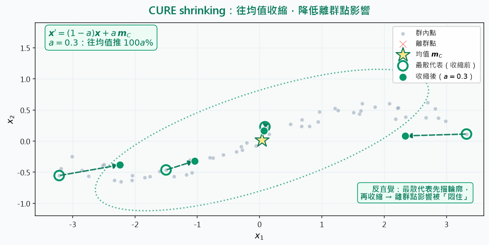
🤖 AI 生圖可用：重繪此示意圖的提示詞（結構化）
# kp14 生圖提示詞：CURE 代表點往均值收縮（shrinking）
## WHAT
2D 示意：一群拉長（細長）的點雲 + 群均值星號；先標 4 個最散代表（空心圓），再用虛線箭頭沿 $\boldsymbol{x}'=(1-a)\boldsymbol{x}+a\boldsymbol{m}_C$ 收到實心點（建議 $a=0.3$）。標題講「往均值收縮，降低離群點影響」。
## WHY
CURE 不用單一均值代表整群，而是挑 $k$ 個最散開的點描輪廓；但邊界離群點會帶跑距離，所以把代表往 $\boldsymbol{m}_C$ 推進去（shrinking）。反直覺：不是「越外圍越代表形狀越好」，而是「先抓最散，再故意往內縮」來悶住離群點。
## MUST show
- 細長點雲（非球形），至少一個明顯離群點。
- 群均值 $\boldsymbol{m}_C$ 用星號標在點雲中央附近。
- 4 個空心代表點（最散），4 個實心收縮後代表點，虛線箭頭從空心指向實心。
- 公式框：$\boldsymbol{x}'=(1-a)\boldsymbol{x}+a\boldsymbol{m}_C$，$a=0.3$。
- 遮住文字後，箭頭「由外圍往中心收」的方向仍清楚可見。
## AVOID
- 不要畫成圓形緊密團塊（CURE 要抓細長形狀）。
- 不要省略收縮箭頭，或只畫均值而無代表點對比。
- 不要讓 $a=1$（全縮成均值）或 $a=0$（完全不縮）——建議 $a=0.3$ 才能看出效果。
- 不要混淆「兩群距離 min 代表點對」——本圖只講群內 shrinking，不畫兩群。
## STYLE
乾淨 2D 散佈圖，emerald #059669 / #047857 主色，空心/實心對比，虛線箭頭，中文標籤，mathtext 公式，淺色背景。一句話
CURE 不用一個均值代表整群，而是先在群裡挑 $k$ 個最散開的點，再把它們往群的均值縮一點。兩群有多遠，看的是這兩組代表點之間最近的那一對。
是什麼
CURE 是 Clustering Using REpresentatives 的縮寫，專門對付樣本很多的資料（網頁探勘、生物資訊這類）。前面講的廣義凝聚方案 GAS，運算量大約是 $N^{3}$，再怎麼省也下不了 $O(N^{2})$。資料一多就撐不住，所以這一節改走「適合大型資料」的階層式算法。
創新點在這裡：每一群 $C$ 不用單一中心，而用 $k\gt 1$ 個代表點組成的集合 $R_{C}$。多個代表比較能抓住群的形狀（細長、不圓都還有機會）。但邊界常常凹凸不平，直接拿最外圍的點當代表會被離群點帶跑。所以選完之後，要把這些點往群的均值 $\boldsymbol{m}_{C}$ 「推」進去，這一步叫 shrinking（收縮）：代表點圍出來的空間會往均值縮小。
挑代表的步驟是：
- 先找離均值最遠的那一點 $\boldsymbol{x}\in C$，令 $R_{C}=\{\boldsymbol{x}\}$。
- 接著 $i=2$ 一直加到 $\min\{k,n_{C}\}$：每次在還沒被選的點裡，找離目前 $R_{C}$ 最遠的 $\boldsymbol{y}$，加進去。這樣挑出來的就是群裡最散開的 $k$ 個點。
- 再對每個代表做收縮：$\boldsymbol{x}=(1-a)\boldsymbol{x}+a\boldsymbol{m}_{C}$，$\forall\boldsymbol{x}\in R_{C}$。這裡 $a$ 是收縮因子。
兩群距離定義成代表點對的最小值（式 13.28）：
$$ \begin{equation*} d(C_{i},C_{j})=\min_{\boldsymbol{x}\in R_{C_{i}},\,\boldsymbol{y}\in R_{C_{j}}}d(\boldsymbol{x},\boldsymbol{y}) \tag{13.28} \end{equation*} $$
有了這套距離，CURE 就是 GAS 的一個特例：每次合併目前最近的兩群。兩群併成 $C_{q}$ 之後，理論上該用 $C_{q}$ 的全部點重選代表；為了省時間，實務上只從原來兩群共 $2k$ 個代表裡再挑 $k$ 個——因為那些點本來就是最散的，合併後通常還是夠散。最後得到 $m$ 群之後，沒當代表的點，就派給「離它最近的那個代表」所屬的那一群。$m$ 可以由使用者指定，也可以用下一張卡片（§13.6）的方法估計。
最壞時間複雜度是 $O(N^{2}\log_{2}N)$，完整資料太大時仍吃不消。CURE 的解法是隨機抽樣：從 $N$ 點裡抽出 $N'$ 點組成 $X'$，而且 $N'$ 要夠大，才比較不會把某個真正的群抽丟。
估好 $N'$ 之後，把整份 $X$ 隨機切成 $p=N/N'$ 份。每一份先各自凝聚，直到形成大約 $N'/q$ 群（$q\gt 1$ 是使用者參數），或下一對要合併的距離已經超過某個門檻。各份做完後，手上最多有 $p(N'/q)=N/q$ 個小群；再跑第二次合併，用每群 $k$ 個代表，一路併到目標的 $m$ 群。最後把沒當代表的點派回去：先從每群抽一批代表，點就跟最近的代表走。
實驗顯示 CURE 對 $k$、$N'$、$a$ 都敏感：
- $k$ 必須夠大，才能抓住各群的幾何形狀。
- 報告裡的實驗，$N'$ 至少要到 $N$ 的 $2.5\%$。
- $a$ 很小（幾乎不縮）時，行為很像 MST（最小生成樹那種「最近就黏」）；$a$ 很大時，比較像「一群只留一個代表點」的算法。特別地，$a=1$ 時所有代表都縮成均值。
抽樣後最壞時間變成 $O(N'^{2}\log_{2}N')$，跟樣本數二次方成長。另外，把最散的點往均值推，會把離群點的壞影響「悶住」，所以對群內離群點比較不敏感。若離群點自己結成很小的群，演算法結束前幾步會檢查「人數很少的群」，把它們當離群點拿掉。CURE 可以挖出非球形、細長、以及大小差很多的群。
為什麼
單一均值只適合圓滾滾的團塊；細長的香蕉形一平均，中心可能掉到群外面。多個最散的代表等於在描群的輪廓，收縮又避免把邊界毛邊、離群點當成形狀。抽樣加「先切 $p$ 份、再二次合併」，是為了讓 $O(N^{2}\log N)$ 掉到抽樣規模，大型資料才跑得動。$a$ 與 $k$ 不是裝飾：$a$ 決定你比較像 MST 還是比較像「只看均值」；$k$ 不夠大，形狀就抓不住。
怎麼用 / 怎麼記
- 口訣：先挑 $k$ 個最散的點，再 shrink 回均值；兩群距離看代表點的 min。
- 收縮：$\boldsymbol{x}=(1-a)\boldsymbol{x}+a\boldsymbol{m}_{C}$。$a$ 小像 MST，$a=1$ 代表全變成均值。
- 加速：抽 $N'$ 點、切 $p=N/N'$ 份，每份收到 $N'/q$ 群，再二次合併到 $m$ 群。
- 複雜度：最壞 $O(N^{2}\log N)$；抽樣後 $O(N'^{2}\log N')$。
- 參數：$k$ 要夠大才抓得住形狀；$N'$ 實驗上至少約 $2.5\%$ 的 $N$。
- 離群點：收縮會把壞影響壓下去；結束前再丟掉人數很少的小群。
CURE 用式 (13.28) 量兩群 $C_{i}$、$C_{j}$ 的距離時，比較的是什麼？
關於 CURE 的收縮因子 $a$ 與抽樣，下列哪一項最符合原文？
ROCK：名義資料用共同鄰居當鏈結
▼🤖 AI 生圖可用：重繪此示意圖的提示詞（結構化）
# AI 生圖提示詞 — kp-15 ROCK 的 link（共同鄰居） ## WHAT 畫一張鄰居圖示意，共 7 個點。上方主區：x（左）與 y（右）之間**沒有**直接連邊（打叉標示），但中間有 n1、n2、n3 三個共同鄰居；x 到各 n、y 到各 n 用實線（鄰居關係），x 經 n 到 y 的三條間接路徑用虛線弧線標出，標「link(x,y) = 3」。下方對照：p 與 q 兩點靠很近（短實線表歐氏距離近），但與上方 n1,n2,n3 完全無關，共同鄰居 = 0。 ## WHY 要傳達的反直覺：名義（類別）資料沒有合理的 l_p 距離——兩點可能「空間上」不近、甚至無直連，但只要共享夠多鄰居（間接的像），link 就強、該合併。反之 p、q 雖然距離近，若共同鄰居為 0，ROCK 不會因為近就合併。讀者遮住文字後仍應看出上區虛線路徑多、下區兩點孤立無共同鄰居。 ## MUST show - 7 個點：x、y、n1、n2、n3、p、q；n1,n2,n3 標「共同鄰居」。 - x—y 無直接邊（打叉或留白），link(x,y)=3 用 3 條 x→n→y 虛線路徑視覺化。 - x-n、y-n 鄰居關係用綠色實線。 - 下方 p、q 距離近但 link=0，與 n 群無連接。 - 對比結論：距離近 ≠ 該合併；ROCK 用 link 取代 l_p 距離；名義特徵看共同鄰居。 - 繁中標籤，無公式、無 $、無外鏈字體；用 svg-panel 不用 class="card"。 ## AVOID - 不要畫成名詞連連看（方框串「鄰居→link→合併」）。 - 不要放 s(x,y)≥θ 或 link 公式。 - 不要讓 x—y 有明顯直連，削弱「無直接距離但有 link」的對比。 - 不要讓 p、q 也連到 n1,n2,n3，否則對照失效。 - 不要用 class="card"。 ## STYLE 扁平圖論示意，主題色 #059669 / #047857，實線=鄰居、虛線=長度 2 路徑，灰色對照區表「距離近但 link=0」，圓角 svg-panel，繁中標籤，幾何承載因果。
一句話
特徵如果是名義（類別）的，均值沒有意義，$\ell_{p}$ 距離也怪怪的。ROCK 改問：兩點有沒有夠多共同鄰居？共同鄰居愈多，link 愈強，兩群就愈該合併。
是什麼
ROCK 是 RObust Clustering using linKs 的縮寫，最適合名義（categorical）特徵。對這種資料，拿群的均值當代表沒有道理；特徵座標來自離散集合時，歐氏、曼哈頓這類 $\ell_{p}$ 距離也很難好好量化「有多像」。所以 ROCK 不用距離合併，改用 link（鏈結）。
先定義鄰居：選一個相似度函數 $s(\cdot)$ 和使用者門檻 $\theta$，若 $s(\boldsymbol{x},\boldsymbol{y})\geq\theta$，就說 $\boldsymbol{x}$、$\boldsymbol{y}$ 是鄰居。再令 $\operatorname{link}(\boldsymbol{x},\boldsymbol{y})$ 為兩點的共同鄰居個數。把資料點當成圖的頂點、鄰居關係當成邊，則 $\operatorname{link}(\boldsymbol{x},\boldsymbol{y})$ 剛好等於連接 $\boldsymbol{x}$ 與 $\boldsymbol{y}$ 的「長度為 2 的相異路徑」條數——中間多經過一個共同鄰居，就多一條長度 2 的路。
原文再假設有一個跟資料、跟你想找的群類型有關的函數 $f(\theta)\lt 1$：分到 $C_{i}$ 的每一點，在 $C_{i}$ 裡大約有 $n_{i}^{f(\theta)}$ 個鄰居（$n_{i}$ 是該群人數）。若群夠大、群外點幾乎不貢獻 link，每一點大約貢獻 $n_{i}^{2f(\theta)}$ 條 link，於是 $C_{i}$ 內部成對點之間的期望 link 總數約是 $n_{i}^{1+2f(\theta)}$。
兩群有多「近」，用觀察到的 link 除掉期望 link（式 13.29）：
$$ \begin{equation*} g(C_{i},C_{j})=\frac{\operatorname{link}(C_{i},C_{j})}{(n_{i}+n_{j})^{1+2f(\theta)}-n_{i}^{1+2f(\theta)}-n_{j}^{1+2f(\theta)}} \tag{13.29} \end{equation*} $$
其中 $\operatorname{link}(C_{i},C_{j})=\sum_{\boldsymbol{x}\in C_{i},\,\boldsymbol{y}\in C_{j}}\operatorname{link}(\boldsymbol{x},\boldsymbol{y})$。分母就是兩群之間期望的 link 總數。$g$ 愈大，兩群愈像。每一次迭代合併 $g$ 最大的那一對，直到群數降到使用者指定的 $m$，或目前分法裡每一對群的 link 都是 0。
資料很大時，ROCK 也跟 CURE 一樣先隨機抽樣得到較小的 $X'$（$N'$ 的估法同 CURE），只在樣本上分群。剩下沒抽到的點 $\boldsymbol{z}$ 再補進去：從每一群 $C_{i}$ 抽出子集 $L_{i}$，數 $\boldsymbol{z}$ 在 $L_{i}$ 裡有幾個鄰居 $N_{i}$，再把 $\boldsymbol{z}$ 派給讓 $N_{i}/(n_{L_{i}}+1)^{f(\theta)}$ 最大的那一群（分母是 $\boldsymbol{z}$ 在 $L_{i}\cup\{\boldsymbol{z}\}$ 裡期望的鄰居數）。
文獻建議可取 $f(\theta)=(1-\theta)/(1+\theta)$（$\theta\lt 1$）。這個 $f(\theta)$ 其實是很強的假設：等於對每一群的內部結構加了約束，資料若不滿足，結果可能變差；不過原文引用的實驗裡，這樣選 $f(\theta)$ 效果還可以。$N$ 很大時，ROCK 最壞時間複雜度跟 CURE 差不多。另外有人證明，在某些條件下 ROCK 的群就是「link 圖」的連通元件，於是有一個只找連通元件的快速版叫 QROCK。
為什麼
名義特徵的值只是狀態代碼（顏色、職業、血型），加減乘除沒有幾何意義，均值會變成「不存在的中間類別」。共同鄰居比較像在問：這兩筆資料是不是常常跟同一批人像？link 把「間接的像」也算進去，比只看兩點本身的相似度穩。式 (13.29) 還用期望值當分母，避免「人多的群光靠人數就把 $g$ 刷很高」——觀察到的鏈結要對得上「這麼大的兩群理當有多少 link」。
怎麼用 / 怎麼記
- 適用：名義／類別特徵；均值與 $\ell_{p}$ 距離都不適合時。
- 鄰居：$s(\boldsymbol{x},\boldsymbol{y})\geq\theta$ 才算鄰居。
- link：共同鄰居數＝圖上長度 2 的路徑數。
- 合併分數：式 (13.29)＝觀察到的 link $\div$ 期望 link；$g$ 最大的兩群先併。
- 加速：跟 CURE 一樣隨機抽樣；沒抽到的點再依鄰居數補派。
- 提醒：$f(\theta)$ 是強假設，群的結構對不上時結果可能變差。
ROCK 裡兩點 $\boldsymbol{x}$、$\boldsymbol{y}$ 的 $\operatorname{link}(\boldsymbol{x},\boldsymbol{y})$ 指的是什麼？
式 (13.29) 的 $g(C_{i},C_{j})$ 在做什麼？ROCK 最適合哪種特徵？
Chameleon：相對互連與相對靠近
▼一句話
CURE 固定用 $k$ 個代表、ROCK 用 $f(\theta)$ 綁住群的長相，都是「先假設群長什麼樣子」。Chameleon 改看相對的：兩群之間的連接，比起各自內部有多緊、有多近，到底夠不夠看？夠才合併。
是什麼
前面兩個算法都在做靜態建模：CURE 每群都用同樣多的 $k$ 個代表，ROCK 用 $f(\theta)$ 給每群加約束。若真實的群不守這套模型、或有雜訊，就可能拆不出來。Chameleon 的目標是各種形狀、各種大小都能找回來。
先把資料建成圖 $G=(V,E)$：每個點一個頂點，邊的權重是兩點的相似度。把一群 $C$ 切成非空的 $C_{1}$、$C_{2}$ 時，橫跨兩邊的那些邊叫做割集。權重和最小的那一種割叫最小割；若再要求兩側人數大致相等，最小的那種叫最小割二等分（minimum cut bisector）。原文用五個頂點的小例子說明：邊權 $0.1,0.2,0.3,0.4,0.5$ 時，最小割對到權重和 $0.3$ 的那組邊，最小割二等分對到和為 $0.4$ 的那組（兩側比較均勻）。
令 $E_{ij}$ 為連接 $C_{i}$ 與 $C_{j}$ 的邊，$E_{i}$ 為 $C_{i}$ 的最小割二等分。絕對互連 $|E_{ij}|$ 是 $E_{ij}$ 的權重和（也就是把 $C_{i}\cup C_{j}$ 切回兩群時的割）；內部互連 $|E_{i}|$ 是 $E_{i}$ 的權重和。相對互連（式 13.30）是：
$$ \begin{equation*} RI_{ij}=\frac{|E_{ij}|}{\dfrac{|E_{i}|+|E_{j}|}{2}} \tag{13.30} \end{equation*} $$
再令 $S_{ij}$ 為 $E_{ij}$ 裡邊權的平均，$S_{i}$ 為 $E_{i}$ 裡邊權的平均。相對靠近（式 13.31）是：
$$ \begin{equation*} RC_{ij}=\frac{S_{ij}}{\dfrac{n_{i}}{n_{i}+n_{j}}S_{i}+\dfrac{n_{j}}{n_{i}+n_{j}}S_{j}} \tag{13.31} \end{equation*} $$
Chameleon 少見地「先分裂、再凝聚」。一開始建 $k$ 近鄰圖：兩邊至少有一邊把對方算進自己的 $k$ 近鄰，就連一條邊（$k$ 通常 5 到 20）。注意這關係可以不對稱：$\boldsymbol{x}$ 是 $\boldsymbol{y}$ 的 $k$ 近鄰，不表示 $\boldsymbol{y}$ 也是 $\boldsymbol{x}$ 的。
分裂階段：全部點先當一群。每次切開時，要讓割的權重和盡量小，而且切出來的每一塊至少佔原來頂點的 $25\%$。之後每次挑目前最大的那一群再切，直到每一群的點數都少於 $q$（使用者參數，常取總點數的 $1\%$ 到 $5\%$）。
凝聚階段：兩群同時夠互連、夠靠近才併（式 13.32）：
$$ \begin{equation*} RI_{ij}\geq T_{RI}\quad\text{且}\quad RC_{ij}\geq T_{RC} \tag{13.32} \end{equation*} $$
$T_{RI}$、$T_{RC}$ 由使用者給。內部愈緊的群，愈「抗拒」被併掉——因為式 (13.30)、(13.31) 的分母裡有自己的內部互連與內部靠近。若同一個 $C_{i}$ 有好幾群都過門檻，就跟 $|E_{ij}|$ 最大的那個併。同一層還允許同時合併不只一對（只要都滿足式 13.32）。另一個規則是改成最大化（式 13.33）
$$ \begin{equation*} RI_{ij}\,RC_{ij}^{a} \tag{13.33} \end{equation*} $$
$a$ 控制 $RI$ 與 $RC$ 誰比較重要，通常取 $1.5$ 到 $3$。
Example 13.10（對應原文 Figure 13.16）。四群、$k=2$。$C_{1}$ 與 $C_{2}$ 最近點相似度 $0.4$，$C_{3}$ 與 $C_{4}$ 最近點相似度 $0.6$——後者比較近。可是 $C_{3}$、$C_{4}$ 自己內部緊很多。原文給的數字是：
- $|E_{1}|=|E_{2}|=0.48$，$|E_{3}|=0.9+0.55=1.45$，$|E_{4}|=1.45$
- $|S_{1}|=|S_{2}|=0.48$，$|S_{3}|=|S_{4}|=1.45/2=0.725$
- $|E_{12}|=0.4$，$|E_{34}|=0.6$，$|S_{12}|=0.4$，$|S_{34}|=0.6$
套進定義得到 $RI_{12}=0.833$、$RI_{34}=0.414$，以及 $RC_{12}=0.833$、$RC_{34}=0.828$。相對互連與相對靠近都比較挺 $C_{1}$ 與 $C_{2}$，所以 Chameleon 合併 $C_{1}$、$C_{2}$；MST 反而會合併比較近的 $C_{3}$、$C_{4}$。
實驗上 Chameleon 對 $k$、$q$、$a$ 不是非常敏感，但需要較大的資料量，內部割與跨群邊才估得準。$N$ 很大時最壞約 $O(N(\log_{2}N+m))$，$m$ 是分裂階段結束後的群數。另外還有一種也適合超大資料的凝聚方法叫 BIRCH：先做預分群、把摘要放進記憶體裡的 CF-tree，再對摘要做凝聚，可以把複雜度做到 $O(N)$。
為什麼
只看「兩群最近有多近」，會把兩個自己已經很緊的團因為靠得近就黏在一起，卻把兩個比較鬆、但其實該連在一起的團拆開。相對互連、相對靠近是在問：跨群那幾條邊，跟各自肚子裡的緊密度比起來，到底算不算一回事？Example 13.10 就是這句話的數字版：$C_{3}$、$C_{4}$ 比較近，可是它們自己內部更緊，相對分數反而比較低，所以不該先併。
怎麼用 / 怎麼記
- 流程：建 $k$NN 圖 $\rightarrow$ 分裂（最小割、每塊至少 $25\%$）$\rightarrow$ 凝聚。
- 兩個分數：$RI$ 看跨群邊權相對內部割；$RC$ 看跨群平均權相對內部平均權。
- 合併：同時過 $T_{RI}$、$T_{RC}$，或改最大化 $RI\cdot RC^{a}$。
- Example 13.10：$RI_{12}=0.833>RI_{34}=0.414$，$RC_{12}=0.833>RC_{34}=0.828$，併 $C_{1}$ 與 $C_{2}$；MST 會併 $C_{3}$、$C_{4}$。
- BIRCH：超大資料可先摘要再凝聚，複雜度可到 $O(N)$。
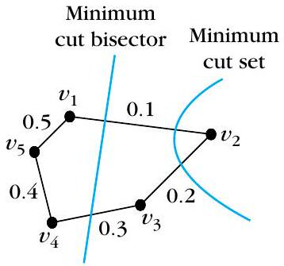
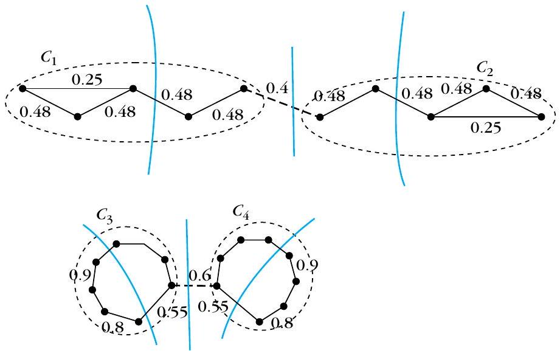
Example 13.10 中，Chameleon 會先合併哪兩群？為什麼不是較近的 $C_{3}$、$C_{4}$？
Chameleon 的相對互連 $RI_{ij}$（式 13.30）與合併規則，下列哪一項正確？
樹要在哪一層砍：壽命最長的叢集
▼一句話
階層樹從 $N$ 群一路黏到 1 群，每一層都是一種切法。比較直觀的做法是找「壽命最長」的叢集：它形成之後很久才被吃進更大的群，通常就是資料裡站得住的那幾團。
是什麼
前面都在長樹；現在要問：整棵樹裡，哪一層的分法最符合資料？這件事等價於「最佳叢集數是幾」。一個很直觀的做法是在接近度樹狀圖（proximity dendrogram）上找 lifetime（壽命）大的叢集。壽命定義成：它被造出來時的接近度高度，與它被吸進更大叢集時的接近度高度，兩者差的絕對值。差愈大，表示這團自己活得愈久。
原文 Figure 13.17a 那種樹，看起來資料裡有兩大叢集；Figure 13.17b 則比較像只有一個主叢集。文獻裡也有人拿「一份資料其實只有一個緊密團」或「其實有兩個緊密團」去試各種凝聚算法，但最後仍要靠人眼判斷樹長什麼樣子，主觀成分少不了。
更形式的方法很多，可以搭配階層或非階層算法。下面兩種（[Bobe 93]）特別適合凝聚算法：演算法不必把整棵 $N$ 層樹都長完，一旦「最符合資料」的那層到了就可以停。
Method I（外在方法）：要使用者給一個閾值。先定義 $h(C)$ 來量同一群裡向量有多不相似，也可以看成群的自我相似度（群內有多散）。常見三種寫法：
$$ \begin{equation*} h_{1}(C)=\max\{d(\boldsymbol{x},\boldsymbol{y}):\boldsymbol{x},\boldsymbol{y}\in C\} \tag{13.34} \end{equation*} $$ $$ \begin{equation*} h_{2}(C)=\operatorname{med}\{d(\boldsymbol{x},\boldsymbol{y}):\boldsymbol{x},\boldsymbol{y}\in C\} \tag{13.35} \end{equation*} $$
若 $d$ 是度量距離，還可以用平均：
$$ \begin{equation*} h_{3}(C)=\frac{1}{2n_{C}}\sum_{\boldsymbol{x}\in C}\sum_{\boldsymbol{y}\in C}d(\boldsymbol{x},\boldsymbol{y}) \tag{13.36} \end{equation*} $$
$n_{C}$ 是該群人數。$h_{1}$ 是群內最遠的那一對（直徑），$h_{2}$ 是群內距離的中位數，$h_{3}$ 是群內兩兩距離的平均（前面有 $1/(2n_{C})$）。給定閾值 $\theta$ 之後：若下一層 $\Re_{t+1}$ 裡已經出現某個叢集滿足 $h(C_{j})\gt \theta$，就停在現在這一層 $\Re_{t}$。白話是：再合併下去會出現「自己內部散過頭」的群，那就不要併了。
有時不直接拍腦袋定 $\theta$，而改寫成 $\theta=\mu+\lambda\sigma$，其中 $\mu$ 是資料裡任意兩點距離的平均、$\sigma$ 是其變異數，$\lambda$ 仍由使用者給。這樣等於把「閾值要多大」轉成比較好估的 $\lambda$。
Method II（內在方法）：不再跟使用者要一個 $\theta$，只看資料自己的結構。最後留下來的分法裡，每一對群之間的距離，都應該比這兩群各自內部的散度還大——群跟群要分得開，而且要比「自己肚子裡有多散」更分得開。原文用的群間距離是第 11 章的 $d_{\min}^{ss}$（兩群點對的最小距離）。這只是必要條件：滿足了不一定就是最佳切法，但不滿足就還不夠格當最終答案。
原文最後提醒：這些做法都帶啟發式成分，只能當「最佳分群」的參考指標，不是證明。
為什麼
樹的每一層都合法，不砍就不知道要回報幾群。壽命長，表示那一團在很寬的高度區間裡都還在，比較不像是「剛好黏一下又立刻被吃掉」的雜訊。Method I 用外在閾值卡住「群內不可以太散」；Method II 改成自洽條件：群間距離必須超過群內散度。兩種都在回答同一句話：再併下去還算同一群嗎？
怎麼用 / 怎麼記
- 壽命：形成高度與被吸收高度之差的絕對值；樹狀圖上壽命長的團，常是主叢集。
- 看圖：13.17a 兩大叢集，13.17b 一個主叢集；仍需要一點人眼判斷。
- Method I：使用者給 $\theta$。$h_{1}$ 對內最遠、$h_{2}$ 中位數、$h_{3}$ 平均；下一層有群 $h(C)\gt \theta$ 就停。
- 閾值變形：可用 $\theta=\mu+\lambda\sigma$，把難題轉到 $\lambda$。
- Method II：不另外要 $\theta$；最終每一對群的群間距離，都要大於兩群各自的群內散度（只是必要條件）。
- 定位：都是啟發式，只能當指標，不是唯一正確答案。
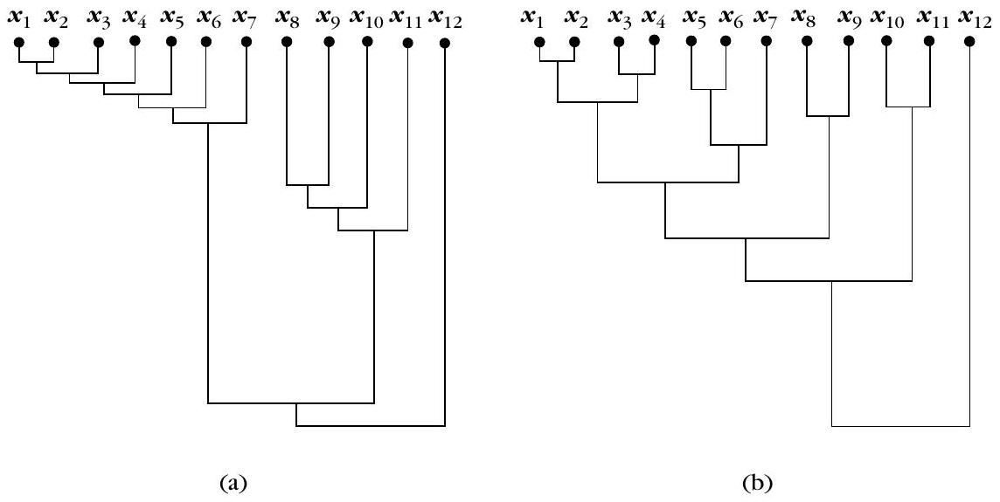
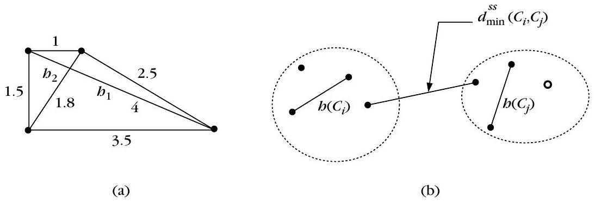
在接近度樹狀圖上，一個叢集的 lifetime（壽命）怎麼定義？Figure 13.17 又分別暗示什麼？
Method I 裡 $h_{1}$、$h_{2}$、$h_{3}$（式 13.34–13.36）分別量什麼？演算法何時停？